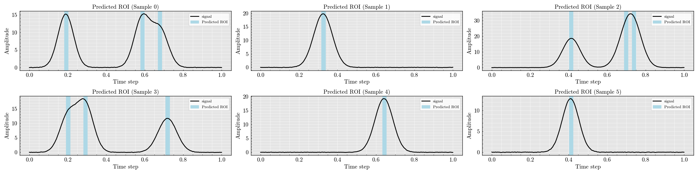
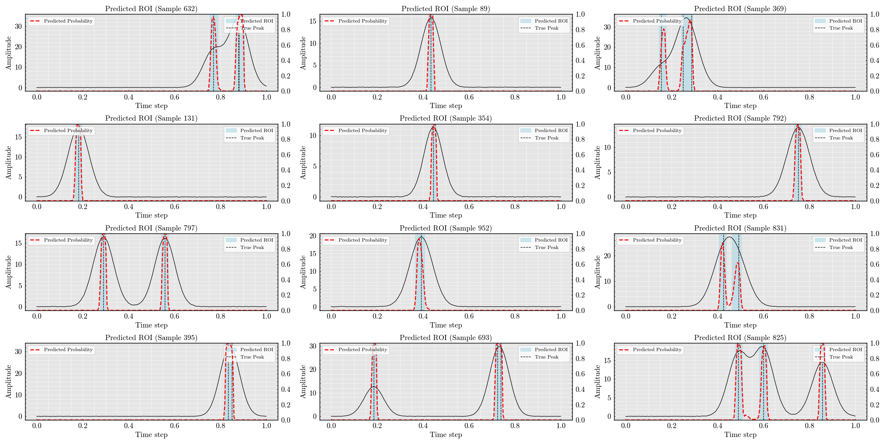

<!DOCTYPE html>


<html lang="en" data-content_root="../" >

  <head>
    <meta charset="utf-8" />
    <meta name="viewport" content="width=device-width, initial-scale=1.0" /><meta name="viewport" content="width=device-width, initial-scale=1" />

    <title>DenseNet Classifier: Detecting Regions of Interest in Synthetic Signals &#8212; DeepPeak  documentation</title>
  
  
  
  <script data-cfasync="false">
    document.documentElement.dataset.mode = localStorage.getItem("mode") || "";
    document.documentElement.dataset.theme = localStorage.getItem("theme") || "";
  </script>
  <!--
    this give us a css class that will be invisible only if js is disabled
  -->
  <noscript>
    <style>
      .pst-js-only { display: none !important; }

    </style>
  </noscript>
  
  <!-- Loaded before other Sphinx assets -->
  <link href="../_static/styles/theme.css?digest=8878045cc6db502f8baf" rel="stylesheet" />
<link href="../_static/styles/pydata-sphinx-theme.css?digest=8878045cc6db502f8baf" rel="stylesheet" />

    <link rel="stylesheet" type="text/css" href="../_static/pygments.css?v=03e43079" />
    <link rel="stylesheet" type="text/css" href="/opt/hostedtoolcache/Python/3.11.14/x64/lib/python3.11/site-packages/docs/source/_static/default.css" />
    <link rel="stylesheet" type="text/css" href="../_static/sg_gallery.css?v=d2d258e8" />
    <link rel="stylesheet" type="text/css" href="../_static/sg_gallery-binder.css?v=f4aeca0c" />
    <link rel="stylesheet" type="text/css" href="../_static/sg_gallery-dataframe.css?v=2082cf3c" />
    <link rel="stylesheet" type="text/css" href="../_static/sg_gallery-rendered-html.css?v=1277b6f3" />
    <link rel="stylesheet" type="text/css" href="../_static/default.css?v=4340df76" />
  
  <!-- So that users can add custom icons -->
  <script src="../_static/scripts/fontawesome.js?digest=8878045cc6db502f8baf"></script>
  <!-- Pre-loaded scripts that we'll load fully later -->
  <link rel="preload" as="script" href="../_static/scripts/bootstrap.js?digest=8878045cc6db502f8baf" />
<link rel="preload" as="script" href="../_static/scripts/pydata-sphinx-theme.js?digest=8878045cc6db502f8baf" />

    <script src="../_static/documentation_options.js?v=5929fcd5"></script>
    <script src="../_static/doctools.js?v=9bcbadda"></script>
    <script src="../_static/sphinx_highlight.js?v=dc90522c"></script>
    <script>DOCUMENTATION_OPTIONS.pagename = 'gallery/classifier_wavenet';</script>
    <script>
        DOCUMENTATION_OPTIONS.theme_version = '0.16.1';
        DOCUMENTATION_OPTIONS.theme_switcher_json_url = 'https://raw.githubusercontent.com/MartinPdeS/DeepPeak/documentation_page/version_switcher.json';
        DOCUMENTATION_OPTIONS.theme_switcher_version_match = 'v0.0.3';
        DOCUMENTATION_OPTIONS.show_version_warning_banner =
            true;
        </script>
    <link rel="icon" href="../_static/thumbnail.png"/>
    <link rel="index" title="Index" href="../genindex.html" />
    <link rel="search" title="Search" href="../search.html" />
    <link rel="next" title="Generating and Visualizing Signal Data" href="data_generation.html" />
    <link rel="prev" title="DenseNet Classifier: Detecting Regions of Interest in Synthetic Signals" href="classifier_dense.html" />
  <meta name="viewport" content="width=device-width, initial-scale=1"/>
  <meta name="docsearch:language" content="en"/>
  <meta name="docsearch:version" content="0.0.3" />
  </head>
  
  
  <body data-bs-spy="scroll" data-bs-target=".bd-toc-nav" data-offset="180" data-bs-root-margin="0px 0px -60%" data-default-mode="">

  
  
  <div id="pst-skip-link" class="skip-link d-print-none"><a href="#main-content">Skip to main content</a></div>
  
  <div id="pst-scroll-pixel-helper"></div>
  
  <button type="button" class="btn rounded-pill" id="pst-back-to-top">
    <i class="fa-solid fa-arrow-up"></i>Back to top</button>

  
  <dialog id="pst-search-dialog">
    
<form class="bd-search d-flex align-items-center"
      action="../search.html"
      method="get">
  <i class="fa-solid fa-magnifying-glass"></i>
  <input type="search"
         class="form-control"
         name="q"
         placeholder="Search the docs ..."
         aria-label="Search the docs ..."
         autocomplete="off"
         autocorrect="off"
         autocapitalize="off"
         spellcheck="false"/>
  <span class="search-button__kbd-shortcut"><kbd class="kbd-shortcut__modifier">Ctrl</kbd>+<kbd>K</kbd></span>
</form>
  </dialog>

  <div class="pst-async-banner-revealer d-none">
  <aside id="bd-header-version-warning" class="d-none d-print-none" aria-label="Version warning"></aside>
</div>

  
    <header class="bd-header navbar navbar-expand-lg bd-navbar d-print-none">
<div class="bd-header__inner bd-page-width">
  <button class="pst-navbar-icon sidebar-toggle primary-toggle" aria-label="Site navigation">
    <span class="fa-solid fa-bars"></span>
  </button>
  
  
  <div class=" navbar-header-items__start">
    
      <div class="navbar-item">

  
    
  

<a class="navbar-brand logo" href="../index.html">
  
  
  
  
  
    
    
      
    
    
    
    
  
  
    <p class="title logo__title">DeepPeak</p>
  
</a></div>
    
  </div>
  
  <div class=" navbar-header-items">
    
    <div class="me-auto navbar-header-items__center">
      
        <div class="navbar-item">
<nav>
  <ul class="bd-navbar-elements navbar-nav">
    
<li class="nav-item ">
  <a class="nav-link nav-internal" href="../code.html">
    API reference
  </a>
</li>


<li class="nav-item current active">
  <a class="nav-link nav-internal" href="index.html">
    Examples
  </a>
</li>


<li class="nav-item ">
  <a class="nav-link nav-internal" href="../theory.html">
    Theory
  </a>
</li>


<li class="nav-item ">
  <a class="nav-link nav-internal" href="../references.html">
    References
  </a>
</li>

  </ul>
</nav></div>
      
    </div>
    
    
    <div class="navbar-header-items__end">
      
        <div class="navbar-item navbar-persistent--container">
          

<button class="btn search-button-field search-button__button pst-js-only" title="Search" aria-label="Search" data-bs-placement="bottom" data-bs-toggle="tooltip">
 <i class="fa-solid fa-magnifying-glass"></i>
 <span class="search-button__default-text">Search</span>
 <span class="search-button__kbd-shortcut"><kbd class="kbd-shortcut__modifier">Ctrl</kbd>+<kbd class="kbd-shortcut__modifier">K</kbd></span>
</button>
        </div>
      
      
        <div class="navbar-item">
<div class="version-switcher__container dropdown pst-js-only">
  <button id="pst-version-switcher-button-2"
    type="button"
    class="version-switcher__button btn btn-sm dropdown-toggle"
    data-bs-toggle="dropdown"
    aria-haspopup="listbox"
    aria-controls="pst-version-switcher-list-2"
    aria-label="Version switcher list"
  >
    Choose version  <!-- this text may get changed later by javascript -->
    <span class="caret"></span>
  </button>
  <div id="pst-version-switcher-list-2"
    class="version-switcher__menu dropdown-menu list-group-flush py-0"
    role="listbox" aria-labelledby="pst-version-switcher-button-2">
    <!-- dropdown will be populated by javascript on page load -->
  </div>
</div></div>
      
        <div class="navbar-item"><ul class="navbar-icon-links"
    aria-label="Icon Links">
        <li class="nav-item">
          
          
          
          
          
          
          
          
          <a href="https://github.com/MartinPdeS/DeepPeak" title="GitHub" class="nav-link pst-navbar-icon" rel="noopener" target="_blank" data-bs-toggle="tooltip" data-bs-placement="bottom"><i class="fa-brands fa-github fa-lg" aria-hidden="true"></i>
            <span class="sr-only">GitHub</span></a>
        </li>
        <li class="nav-item">
          
          
          
          
          
          
          
          
          <a href="https://pypi.org/project/DeepPeak/" title="PyPI" class="nav-link pst-navbar-icon" rel="noopener" target="_blank" data-bs-toggle="tooltip" data-bs-placement="bottom"><i class="fa-solid fa-box fa-lg" aria-hidden="true"></i>
            <span class="sr-only">PyPI</span></a>
        </li>
        <li class="nav-item">
          
          
          
          
          
          
          
          
          <a href="https://anaconda.org/MartinPdeS/DeepPeak" title="Anaconda" class="nav-link pst-navbar-icon" rel="noopener" target="_blank" data-bs-toggle="tooltip" data-bs-placement="bottom"><i class="fa-brands fa-python fa-lg" aria-hidden="true"></i>
            <span class="sr-only">Anaconda</span></a>
        </li>
</ul></div>
      
    </div>
    
  </div>
  
  
    <div class="navbar-persistent--mobile">

<button class="btn search-button-field search-button__button pst-js-only" title="Search" aria-label="Search" data-bs-placement="bottom" data-bs-toggle="tooltip">
 <i class="fa-solid fa-magnifying-glass"></i>
 <span class="search-button__default-text">Search</span>
 <span class="search-button__kbd-shortcut"><kbd class="kbd-shortcut__modifier">Ctrl</kbd>+<kbd class="kbd-shortcut__modifier">K</kbd></span>
</button>
    </div>
  

  
    <button class="pst-navbar-icon sidebar-toggle secondary-toggle" aria-label="On this page">
      <span class="fa-solid fa-outdent"></span>
    </button>
  
</div>

    </header>
  

  <div class="bd-container">
    <div class="bd-container__inner bd-page-width">
      
      
      
      <dialog id="pst-primary-sidebar-modal"></dialog>
      <div id="pst-primary-sidebar" class="bd-sidebar-primary bd-sidebar">
        

  
  <div class="sidebar-header-items sidebar-primary__section">
    
    
      <div class="sidebar-header-items__center">
        
          
          
            <div class="navbar-item">
<nav>
  <ul class="bd-navbar-elements navbar-nav">
    
<li class="nav-item ">
  <a class="nav-link nav-internal" href="../code.html">
    API reference
  </a>
</li>


<li class="nav-item current active">
  <a class="nav-link nav-internal" href="index.html">
    Examples
  </a>
</li>


<li class="nav-item ">
  <a class="nav-link nav-internal" href="../theory.html">
    Theory
  </a>
</li>


<li class="nav-item ">
  <a class="nav-link nav-internal" href="../references.html">
    References
  </a>
</li>

  </ul>
</nav></div>
          
        
      </div>
    
    
    
      <div class="sidebar-header-items__end">
        
          <div class="navbar-item">
<div class="version-switcher__container dropdown pst-js-only">
  <button id="pst-version-switcher-button-3"
    type="button"
    class="version-switcher__button btn btn-sm dropdown-toggle"
    data-bs-toggle="dropdown"
    aria-haspopup="listbox"
    aria-controls="pst-version-switcher-list-3"
    aria-label="Version switcher list"
  >
    Choose version  <!-- this text may get changed later by javascript -->
    <span class="caret"></span>
  </button>
  <div id="pst-version-switcher-list-3"
    class="version-switcher__menu dropdown-menu list-group-flush py-0"
    role="listbox" aria-labelledby="pst-version-switcher-button-3">
    <!-- dropdown will be populated by javascript on page load -->
  </div>
</div></div>
        
          <div class="navbar-item"><ul class="navbar-icon-links"
    aria-label="Icon Links">
        <li class="nav-item">
          
          
          
          
          
          
          
          
          <a href="https://github.com/MartinPdeS/DeepPeak" title="GitHub" class="nav-link pst-navbar-icon" rel="noopener" target="_blank" data-bs-toggle="tooltip" data-bs-placement="bottom"><i class="fa-brands fa-github fa-lg" aria-hidden="true"></i>
            <span class="sr-only">GitHub</span></a>
        </li>
        <li class="nav-item">
          
          
          
          
          
          
          
          
          <a href="https://pypi.org/project/DeepPeak/" title="PyPI" class="nav-link pst-navbar-icon" rel="noopener" target="_blank" data-bs-toggle="tooltip" data-bs-placement="bottom"><i class="fa-solid fa-box fa-lg" aria-hidden="true"></i>
            <span class="sr-only">PyPI</span></a>
        </li>
        <li class="nav-item">
          
          
          
          
          
          
          
          
          <a href="https://anaconda.org/MartinPdeS/DeepPeak" title="Anaconda" class="nav-link pst-navbar-icon" rel="noopener" target="_blank" data-bs-toggle="tooltip" data-bs-placement="bottom"><i class="fa-brands fa-python fa-lg" aria-hidden="true"></i>
            <span class="sr-only">Anaconda</span></a>
        </li>
</ul></div>
        
      </div>
    
  </div>
  
    <div class="sidebar-primary-items__start sidebar-primary__section">
        <div class="sidebar-primary-item">
<nav class="bd-docs-nav bd-links"
     aria-label="Section Navigation">
  <p class="bd-links__title" role="heading" aria-level="1">Section Navigation</p>
  <div class="bd-toc-item navbar-nav"><ul class="current nav bd-sidenav">
<li class="toctree-l1"><a class="reference internal" href="amplitude_retrieval.html">Non-Maximum Suppression for Gaussian Pulse Detection</a></li>
<li class="toctree-l1"><a class="reference internal" href="classifier_autoencoder.html">DenseNet Classifier: Detecting Regions of Interest in Synthetic Signals</a></li>
<li class="toctree-l1"><a class="reference internal" href="classifier_dense.html">DenseNet Classifier: Detecting Regions of Interest in Synthetic Signals</a></li>
<li class="toctree-l1 current active"><a class="current reference internal" href="#">DenseNet Classifier: Detecting Regions of Interest in Synthetic Signals</a></li>
<li class="toctree-l1"><a class="reference internal" href="data_generation.html">Generating and Visualizing Signal Data</a></li>
<li class="toctree-l1"><a class="reference internal" href="non_maximum_suppression.html">Non-Maximum Suppression for Gaussian Pulse Detection</a></li>
</ul>
</div>
</nav></div>
    </div>
  
  
  <div class="sidebar-primary-items__end sidebar-primary__section">
      <div class="sidebar-primary-item">
<div id="ethical-ad-placement"
      class="flat"
      data-ea-publisher="readthedocs"
      data-ea-type="readthedocs-sidebar"
      data-ea-manual="true">
</div></div>
  </div>


      </div>
      
      <main id="main-content" class="bd-main" role="main">
        
        
          <div class="bd-content">
            <div class="bd-article-container">
              
              <div class="bd-header-article d-print-none">
<div class="header-article-items header-article__inner">
  
    <div class="header-article-items__start">
      
        <div class="header-article-item">

<nav aria-label="Breadcrumb" class="d-print-none">
  <ul class="bd-breadcrumbs">
    
    <li class="breadcrumb-item breadcrumb-home">
      <a href="../index.html" class="nav-link" aria-label="Home">
        <i class="fa-solid fa-home"></i>
      </a>
    </li>
    
    <li class="breadcrumb-item"><a href="index.html" class="nav-link">Examples</a></li>
    
    <li class="breadcrumb-item active" aria-current="page"><span class="ellipsis">DenseNet Classifier: Detecting Regions of Interest in Synthetic Signals</span></li>
  </ul>
</nav>
</div>
      
    </div>
  
  
</div>
</div>
              
              
              
                
<div id="searchbox"></div>
                <article class="bd-article">
                  
  <div class="sphx-glr-download-link-note admonition note">
<p class="admonition-title">Note</p>
<p><a class="reference internal" href="#sphx-glr-download-gallery-classifier-wavenet-py"><span class="std std-ref">Go to the end</span></a>
to download the full example code.</p>
</div>
<section class="sphx-glr-example-title" id="densenet-classifier-detecting-regions-of-interest-in-synthetic-signals">
<span id="sphx-glr-gallery-classifier-wavenet-py"></span><h1>DenseNet Classifier: Detecting Regions of Interest in Synthetic Signals<a class="headerlink" href="#densenet-classifier-detecting-regions-of-interest-in-synthetic-signals" title="Link to this heading">#</a></h1>
<p>This example demonstrates how to use DeepPeak’s DenseNet classifier to identify
regions of interest (ROIs) in synthetic 1D signals containing Gaussian peaks.</p>
<p>We will:
- Generate a dataset of noisy signals with random Gaussian peaks
- Build and train a DenseNet classifier to detect ROIs
- Visualize the training process and model predictions</p>
<div class="admonition note">
<p class="admonition-title">Note</p>
<p>This example is fully reproducible and suitable for Sphinx-Gallery documentation.</p>
</div>
<section id="imports-and-reproducibility">
<h2>Imports and reproducibility<a class="headerlink" href="#imports-and-reproducibility" title="Link to this heading">#</a></h2>
<div class="highlight-Python notranslate"><div class="highlight"><pre><span></span><span class="kn">import</span><span class="w"> </span><span class="nn">numpy</span><span class="w"> </span><span class="k">as</span><span class="w"> </span><span class="nn">np</span>

<span class="kn">from</span><span class="w"> </span><span class="nn">DeepPeak.machine_learning.classifier</span><span class="w"> </span><span class="kn">import</span> <span class="n">WaveNet</span><span class="p">,</span> <span class="n">BinaryIoU</span>
<span class="kn">from</span><span class="w"> </span><span class="nn">DeepPeak.signals</span><span class="w"> </span><span class="kn">import</span> <span class="n">SignalDatasetGenerator</span>
<span class="kn">from</span><span class="w"> </span><span class="nn">DeepPeak</span><span class="w"> </span><span class="kn">import</span> <span class="n">kernel</span>
<span class="kn">import</span><span class="w"> </span><span class="nn">DeepPeak</span>

<span class="n">np</span><span class="o">.</span><span class="n">random</span><span class="o">.</span><span class="n">seed</span><span class="p">(</span><span class="mi">42</span><span class="p">)</span>
</pre></div>
</div>
</section>
<section id="generate-synthetic-dataset">
<h2>Generate synthetic dataset<a class="headerlink" href="#generate-synthetic-dataset" title="Link to this heading">#</a></h2>
<div class="highlight-Python notranslate"><div class="highlight"><pre><span></span><span class="n">NUM_PEAKS</span> <span class="o">=</span> <span class="mi">3</span>
<span class="n">SEQUENCE_LENGTH</span> <span class="o">=</span> <span class="mi">200</span>

<span class="n">kernel</span> <span class="o">=</span> <span class="n">DeepPeak</span><span class="o">.</span><span class="n">kernel</span><span class="o">.</span><span class="n">Gaussian</span><span class="p">(</span>
    <span class="n">amplitude</span><span class="o">=</span><span class="p">(</span><span class="mi">10</span><span class="p">,</span> <span class="mi">20</span><span class="p">),</span>
    <span class="n">position</span><span class="o">=</span><span class="p">(</span><span class="mf">0.1</span><span class="p">,</span> <span class="mf">0.9</span><span class="p">),</span>
    <span class="n">width</span><span class="o">=</span><span class="p">(</span><span class="mf">0.04</span> <span class="o">*</span> <span class="mi">1</span><span class="p">,</span> <span class="mf">0.05</span> <span class="o">*</span> <span class="mi">1</span><span class="p">),</span>
<span class="p">)</span>

<span class="n">generator</span> <span class="o">=</span> <span class="n">SignalDatasetGenerator</span><span class="p">(</span><span class="n">n_samples</span><span class="o">=</span><span class="mi">1000</span><span class="p">,</span> <span class="n">sequence_length</span><span class="o">=</span><span class="n">SEQUENCE_LENGTH</span><span class="p">)</span>

<span class="n">dataset</span> <span class="o">=</span> <span class="n">generator</span><span class="o">.</span><span class="n">generate</span><span class="p">(</span>
    <span class="n">kernel</span><span class="o">=</span><span class="n">kernel</span><span class="p">,</span>
    <span class="n">n_peaks</span><span class="o">=</span><span class="p">(</span><span class="mi">1</span><span class="p">,</span> <span class="n">NUM_PEAKS</span><span class="p">),</span>
    <span class="n">noise_std</span><span class="o">=</span><span class="mf">0.03</span><span class="p">,</span>
    <span class="n">categorical_peak_count</span><span class="o">=</span><span class="kc">False</span><span class="p">,</span>
    <span class="n">compute_region_of_interest</span><span class="o">=</span><span class="kc">True</span><span class="p">,</span>
<span class="p">)</span>
</pre></div>
</div>
</section>
<section id="visualize-a-few-example-signals-and-their-regions-of-interest">
<h2>Visualize a few example signals and their regions of interest<a class="headerlink" href="#visualize-a-few-example-signals-and-their-regions-of-interest" title="Link to this heading">#</a></h2>
<div class="highlight-Python notranslate"><div class="highlight"><pre><span></span><span class="n">_</span> <span class="o">=</span> <span class="n">dataset</span><span class="o">.</span><span class="n">plot</span><span class="p">(</span><span class="n">number_of_samples</span><span class="o">=</span><span class="mi">6</span><span class="p">,</span> <span class="n">number_of_columns</span><span class="o">=</span><span class="mi">3</span><span class="p">)</span>
</pre></div>
</div>
</section>
<section id="build-and-summarize-the-wavenet-classifier">
<h2>Build and summarize the WaveNet classifier<a class="headerlink" href="#build-and-summarize-the-wavenet-classifier" title="Link to this heading">#</a></h2>
<div class="highlight-Python notranslate"><div class="highlight"><pre><span></span><span class="n">wavenet</span> <span class="o">=</span> <span class="n">WaveNet</span><span class="p">(</span>
    <span class="n">sequence_length</span><span class="o">=</span><span class="n">SEQUENCE_LENGTH</span><span class="p">,</span>
    <span class="n">num_filters</span><span class="o">=</span><span class="mi">64</span><span class="p">,</span>
    <span class="n">num_dilation_layers</span><span class="o">=</span><span class="mi">3</span><span class="p">,</span>
    <span class="n">kernel_size</span><span class="o">=</span><span class="mi">4</span><span class="p">,</span>
    <span class="n">optimizer</span><span class="o">=</span><span class="s2">&quot;adam&quot;</span><span class="p">,</span>
    <span class="n">loss</span><span class="o">=</span><span class="s2">&quot;binary_crossentropy&quot;</span><span class="p">,</span>
    <span class="n">metrics</span><span class="o">=</span><span class="p">[</span><span class="s2">&quot;accuracy&quot;</span><span class="p">,</span> <span class="n">BinaryIoU</span><span class="p">(</span><span class="n">threshold</span><span class="o">=</span><span class="mf">0.5</span><span class="p">)],</span>
<span class="p">)</span>

<span class="n">wavenet</span><span class="o">.</span><span class="n">build</span><span class="p">()</span>
</pre></div>
</div>
<div class="sphx-glr-script-out highlight-none notranslate"><div class="highlight"><pre><span></span>&lt;Functional name=WaveNetDetector, built=True&gt;
</pre></div>
</div>
</section>
<section id="train-the-classifier">
<h2>Train the classifier<a class="headerlink" href="#train-the-classifier" title="Link to this heading">#</a></h2>
<div class="highlight-Python notranslate"><div class="highlight"><pre><span></span><span class="n">history</span> <span class="o">=</span> <span class="n">wavenet</span><span class="o">.</span><span class="n">fit</span><span class="p">(</span>
    <span class="n">dataset</span><span class="o">.</span><span class="n">signals</span><span class="p">,</span>
    <span class="n">dataset</span><span class="o">.</span><span class="n">region_of_interest</span><span class="p">,</span>
    <span class="n">validation_split</span><span class="o">=</span><span class="mf">0.2</span><span class="p">,</span>
    <span class="n">epochs</span><span class="o">=</span><span class="mi">40</span><span class="p">,</span>
    <span class="n">batch_size</span><span class="o">=</span><span class="mi">64</span><span class="p">,</span>
<span class="p">)</span>
</pre></div>
</div>
<div class="sphx-glr-script-out highlight-none notranslate"><div class="highlight"><pre><span></span>Epoch 1/40

 1/13 ━━━━━━━━━━━━━━━━━━━━ 26s 2s/step - BinaryIoU: 0.0000e+00 - accuracy: 0.6492 - loss: 0.7138
 2/13 ━━━━━━━━━━━━━━━━━━━━ 0s 50ms/step - BinaryIoU: 0.0333 - accuracy: 0.6662 - loss: 0.8902   
 4/13 ━━━━━━━━━━━━━━━━━━━━ 0s 50ms/step - BinaryIoU: 0.0686 - accuracy: 0.7175 - loss: 0.8890
 6/13 ━━━━━━━━━━━━━━━━━━━━ 0s 50ms/step - BinaryIoU: 0.0770 - accuracy: 0.7573 - loss: 0.8783
 8/13 ━━━━━━━━━━━━━━━━━━━━ 0s 50ms/step - BinaryIoU: 0.0792 - accuracy: 0.7851 - loss: 0.8642
10/13 ━━━━━━━━━━━━━━━━━━━━ 0s 50ms/step - BinaryIoU: 0.0791 - accuracy: 0.8053 - loss: 0.8426
12/13 ━━━━━━━━━━━━━━━━━━━━ 0s 50ms/step - BinaryIoU: 0.0847 - accuracy: 0.8197 - loss: 0.8177
Epoch 1: val_loss improved from None to 0.25263, saving model to /tmp/wavenet_ckpt_qrcqia5q/best.weights.h5

13/13 ━━━━━━━━━━━━━━━━━━━━ 3s 84ms/step - BinaryIoU: 0.1327 - accuracy: 0.8937 - loss: 0.6652 - val_BinaryIoU: 0.0000e+00 - val_accuracy: 0.9501 - val_loss: 0.2526
Epoch 2/40

 1/13 ━━━━━━━━━━━━━━━━━━━━ 3s 262ms/step - BinaryIoU: 0.0000e+00 - accuracy: 0.9538 - loss: 0.2471
 2/13 ━━━━━━━━━━━━━━━━━━━━ 0s 55ms/step - BinaryIoU: 0.0000e+00 - accuracy: 0.9528 - loss: 0.2528 
 3/13 ━━━━━━━━━━━━━━━━━━━━ 0s 57ms/step - BinaryIoU: 0.0000e+00 - accuracy: 0.9526 - loss: 0.2522
 4/13 ━━━━━━━━━━━━━━━━━━━━ 0s 56ms/step - BinaryIoU: 0.0000e+00 - accuracy: 0.9525 - loss: 0.2478
 5/13 ━━━━━━━━━━━━━━━━━━━━ 0s 55ms/step - BinaryIoU: 0.0077 - accuracy: 0.9527 - loss: 0.2412    
 6/13 ━━━━━━━━━━━━━━━━━━━━ 0s 55ms/step - BinaryIoU: 0.0329 - accuracy: 0.9529 - loss: 0.2345
 7/13 ━━━━━━━━━━━━━━━━━━━━ 0s 55ms/step - BinaryIoU: 0.0599 - accuracy: 0.9531 - loss: 0.2281
 8/13 ━━━━━━━━━━━━━━━━━━━━ 0s 54ms/step - BinaryIoU: 0.0860 - accuracy: 0.9534 - loss: 0.2220
 9/13 ━━━━━━━━━━━━━━━━━━━━ 0s 54ms/step - BinaryIoU: 0.1048 - accuracy: 0.9536 - loss: 0.2161
10/13 ━━━━━━━━━━━━━━━━━━━━ 0s 54ms/step - BinaryIoU: 0.1177 - accuracy: 0.9537 - loss: 0.2108
11/13 ━━━━━━━━━━━━━━━━━━━━ 0s 54ms/step - BinaryIoU: 0.1276 - accuracy: 0.9539 - loss: 0.2058
12/13 ━━━━━━━━━━━━━━━━━━━━ 0s 54ms/step - BinaryIoU: 0.1386 - accuracy: 0.9541 - loss: 0.2011
Epoch 2: val_loss improved from 0.25263 to 0.09274, saving model to /tmp/wavenet_ckpt_qrcqia5q/best.weights.h5

13/13 ━━━━━━━━━━━━━━━━━━━━ 1s 68ms/step - BinaryIoU: 0.2732 - accuracy: 0.9568 - loss: 0.1471 - val_BinaryIoU: 0.5018 - val_accuracy: 0.9592 - val_loss: 0.0927
Epoch 3/40

 1/13 ━━━━━━━━━━━━━━━━━━━━ 0s 65ms/step - BinaryIoU: 0.5278 - accuracy: 0.9635 - loss: 0.0805
 2/13 ━━━━━━━━━━━━━━━━━━━━ 0s 55ms/step - BinaryIoU: 0.5317 - accuracy: 0.9654 - loss: 0.0792
 3/13 ━━━━━━━━━━━━━━━━━━━━ 0s 54ms/step - BinaryIoU: 0.4988 - accuracy: 0.9646 - loss: 0.0815
 4/13 ━━━━━━━━━━━━━━━━━━━━ 0s 54ms/step - BinaryIoU: 0.4801 - accuracy: 0.9646 - loss: 0.0818
 5/13 ━━━━━━━━━━━━━━━━━━━━ 0s 54ms/step - BinaryIoU: 0.4753 - accuracy: 0.9650 - loss: 0.0816
 6/13 ━━━━━━━━━━━━━━━━━━━━ 0s 54ms/step - BinaryIoU: 0.4753 - accuracy: 0.9654 - loss: 0.0811
 7/13 ━━━━━━━━━━━━━━━━━━━━ 0s 53ms/step - BinaryIoU: 0.4774 - accuracy: 0.9657 - loss: 0.0807
 8/13 ━━━━━━━━━━━━━━━━━━━━ 0s 53ms/step - BinaryIoU: 0.4806 - accuracy: 0.9661 - loss: 0.0802
 9/13 ━━━━━━━━━━━━━━━━━━━━ 0s 53ms/step - BinaryIoU: 0.4830 - accuracy: 0.9665 - loss: 0.0798
10/13 ━━━━━━━━━━━━━━━━━━━━ 0s 53ms/step - BinaryIoU: 0.4848 - accuracy: 0.9669 - loss: 0.0793
11/13 ━━━━━━━━━━━━━━━━━━━━ 0s 54ms/step - BinaryIoU: 0.4869 - accuracy: 0.9672 - loss: 0.0789
12/13 ━━━━━━━━━━━━━━━━━━━━ 0s 53ms/step - BinaryIoU: 0.4891 - accuracy: 0.9675 - loss: 0.0785
Epoch 3: val_loss improved from 0.09274 to 0.07162, saving model to /tmp/wavenet_ckpt_qrcqia5q/best.weights.h5

13/13 ━━━━━━━━━━━━━━━━━━━━ 1s 65ms/step - BinaryIoU: 0.5174 - accuracy: 0.9709 - loss: 0.0732 - val_BinaryIoU: 0.5991 - val_accuracy: 0.9758 - val_loss: 0.0716
Epoch 4/40

 1/13 ━━━━━━━━━━━━━━━━━━━━ 0s 65ms/step - BinaryIoU: 0.6032 - accuracy: 0.9767 - loss: 0.0679
 2/13 ━━━━━━━━━━━━━━━━━━━━ 0s 54ms/step - BinaryIoU: 0.5944 - accuracy: 0.9772 - loss: 0.0659
 3/13 ━━━━━━━━━━━━━━━━━━━━ 0s 53ms/step - BinaryIoU: 0.5833 - accuracy: 0.9769 - loss: 0.0667
 4/13 ━━━━━━━━━━━━━━━━━━━━ 0s 53ms/step - BinaryIoU: 0.5828 - accuracy: 0.9770 - loss: 0.0663
 5/13 ━━━━━━━━━━━━━━━━━━━━ 0s 54ms/step - BinaryIoU: 0.5834 - accuracy: 0.9770 - loss: 0.0660
 6/13 ━━━━━━━━━━━━━━━━━━━━ 0s 53ms/step - BinaryIoU: 0.5831 - accuracy: 0.9769 - loss: 0.0658
 7/13 ━━━━━━━━━━━━━━━━━━━━ 0s 53ms/step - BinaryIoU: 0.5838 - accuracy: 0.9768 - loss: 0.0656
 8/13 ━━━━━━━━━━━━━━━━━━━━ 0s 53ms/step - BinaryIoU: 0.5832 - accuracy: 0.9768 - loss: 0.0654
 9/13 ━━━━━━━━━━━━━━━━━━━━ 0s 53ms/step - BinaryIoU: 0.5831 - accuracy: 0.9767 - loss: 0.0652
10/13 ━━━━━━━━━━━━━━━━━━━━ 0s 53ms/step - BinaryIoU: 0.5833 - accuracy: 0.9767 - loss: 0.0650
11/13 ━━━━━━━━━━━━━━━━━━━━ 0s 52ms/step - BinaryIoU: 0.5839 - accuracy: 0.9767 - loss: 0.0648
12/13 ━━━━━━━━━━━━━━━━━━━━ 0s 52ms/step - BinaryIoU: 0.5847 - accuracy: 0.9767 - loss: 0.0647
Epoch 4: val_loss improved from 0.07162 to 0.06727, saving model to /tmp/wavenet_ckpt_qrcqia5q/best.weights.h5

13/13 ━━━━━━━━━━━━━━━━━━━━ 1s 61ms/step - BinaryIoU: 0.5951 - accuracy: 0.9768 - loss: 0.0631 - val_BinaryIoU: 0.5818 - val_accuracy: 0.9762 - val_loss: 0.0673
Epoch 5/40

 1/13 ━━━━━━━━━━━━━━━━━━━━ 0s 61ms/step - BinaryIoU: 0.5611 - accuracy: 0.9725 - loss: 0.0749
 3/13 ━━━━━━━━━━━━━━━━━━━━ 0s 49ms/step - BinaryIoU: 0.5874 - accuracy: 0.9747 - loss: 0.0681
 5/13 ━━━━━━━━━━━━━━━━━━━━ 0s 49ms/step - BinaryIoU: 0.5950 - accuracy: 0.9755 - loss: 0.0652
 6/13 ━━━━━━━━━━━━━━━━━━━━ 0s 50ms/step - BinaryIoU: 0.5963 - accuracy: 0.9758 - loss: 0.0643
 7/13 ━━━━━━━━━━━━━━━━━━━━ 0s 50ms/step - BinaryIoU: 0.5971 - accuracy: 0.9760 - loss: 0.0638
 8/13 ━━━━━━━━━━━━━━━━━━━━ 0s 50ms/step - BinaryIoU: 0.5981 - accuracy: 0.9761 - loss: 0.0634
 9/13 ━━━━━━━━━━━━━━━━━━━━ 0s 50ms/step - BinaryIoU: 0.5994 - accuracy: 0.9763 - loss: 0.0630
10/13 ━━━━━━━━━━━━━━━━━━━━ 0s 51ms/step - BinaryIoU: 0.6006 - accuracy: 0.9764 - loss: 0.0627
12/13 ━━━━━━━━━━━━━━━━━━━━ 0s 50ms/step - BinaryIoU: 0.6009 - accuracy: 0.9765 - loss: 0.0622
Epoch 5: val_loss improved from 0.06727 to 0.06357, saving model to /tmp/wavenet_ckpt_qrcqia5q/best.weights.h5

13/13 ━━━━━━━━━━━━━━━━━━━━ 1s 60ms/step - BinaryIoU: 0.6020 - accuracy: 0.9768 - loss: 0.0601 - val_BinaryIoU: 0.6160 - val_accuracy: 0.9756 - val_loss: 0.0636
Epoch 6/40

 1/13 ━━━━━━━━━━━━━━━━━━━━ 0s 61ms/step - BinaryIoU: 0.6324 - accuracy: 0.9771 - loss: 0.0603
 3/13 ━━━━━━━━━━━━━━━━━━━━ 0s 49ms/step - BinaryIoU: 0.5973 - accuracy: 0.9766 - loss: 0.0602
 5/13 ━━━━━━━━━━━━━━━━━━━━ 0s 49ms/step - BinaryIoU: 0.5911 - accuracy: 0.9761 - loss: 0.0608
 7/13 ━━━━━━━━━━━━━━━━━━━━ 0s 49ms/step - BinaryIoU: 0.5938 - accuracy: 0.9761 - loss: 0.0605
 9/13 ━━━━━━━━━━━━━━━━━━━━ 0s 49ms/step - BinaryIoU: 0.5953 - accuracy: 0.9764 - loss: 0.0600
11/13 ━━━━━━━━━━━━━━━━━━━━ 0s 49ms/step - BinaryIoU: 0.5974 - accuracy: 0.9766 - loss: 0.0595
13/13 ━━━━━━━━━━━━━━━━━━━━ 0s 48ms/step - BinaryIoU: 0.5991 - accuracy: 0.9767 - loss: 0.0592
Epoch 6: val_loss improved from 0.06357 to 0.05993, saving model to /tmp/wavenet_ckpt_qrcqia5q/best.weights.h5

13/13 ━━━━━━━━━━━━━━━━━━━━ 1s 59ms/step - BinaryIoU: 0.6096 - accuracy: 0.9775 - loss: 0.0574 - val_BinaryIoU: 0.6204 - val_accuracy: 0.9777 - val_loss: 0.0599
Epoch 7/40

 1/13 ━━━━━━━━━━━━━━━━━━━━ 0s 61ms/step - BinaryIoU: 0.6740 - accuracy: 0.9827 - loss: 0.0507
 3/13 ━━━━━━━━━━━━━━━━━━━━ 0s 50ms/step - BinaryIoU: 0.6602 - accuracy: 0.9816 - loss: 0.0519
 5/13 ━━━━━━━━━━━━━━━━━━━━ 0s 49ms/step - BinaryIoU: 0.6557 - accuracy: 0.9811 - loss: 0.0523
 6/13 ━━━━━━━━━━━━━━━━━━━━ 0s 49ms/step - BinaryIoU: 0.6540 - accuracy: 0.9809 - loss: 0.0526
 7/13 ━━━━━━━━━━━━━━━━━━━━ 0s 50ms/step - BinaryIoU: 0.6521 - accuracy: 0.9807 - loss: 0.0529
 8/13 ━━━━━━━━━━━━━━━━━━━━ 0s 50ms/step - BinaryIoU: 0.6509 - accuracy: 0.9806 - loss: 0.0531
10/13 ━━━━━━━━━━━━━━━━━━━━ 0s 50ms/step - BinaryIoU: 0.6493 - accuracy: 0.9804 - loss: 0.0532
12/13 ━━━━━━━━━━━━━━━━━━━━ 0s 50ms/step - BinaryIoU: 0.6489 - accuracy: 0.9804 - loss: 0.0533
Epoch 7: val_loss improved from 0.05993 to 0.05771, saving model to /tmp/wavenet_ckpt_qrcqia5q/best.weights.h5

13/13 ━━━━━━━━━━━━━━━━━━━━ 1s 59ms/step - BinaryIoU: 0.6428 - accuracy: 0.9797 - loss: 0.0539 - val_BinaryIoU: 0.6525 - val_accuracy: 0.9785 - val_loss: 0.0577
Epoch 8/40

 1/13 ━━━━━━━━━━━━━━━━━━━━ 0s 62ms/step - BinaryIoU: 0.6843 - accuracy: 0.9813 - loss: 0.0527
 2/13 ━━━━━━━━━━━━━━━━━━━━ 0s 52ms/step - BinaryIoU: 0.6768 - accuracy: 0.9811 - loss: 0.0520
 4/13 ━━━━━━━━━━━━━━━━━━━━ 0s 50ms/step - BinaryIoU: 0.6624 - accuracy: 0.9806 - loss: 0.0522
 6/13 ━━━━━━━━━━━━━━━━━━━━ 0s 50ms/step - BinaryIoU: 0.6595 - accuracy: 0.9805 - loss: 0.0520
 8/13 ━━━━━━━━━━━━━━━━━━━━ 0s 50ms/step - BinaryIoU: 0.6573 - accuracy: 0.9804 - loss: 0.0518
10/13 ━━━━━━━━━━━━━━━━━━━━ 0s 50ms/step - BinaryIoU: 0.6544 - accuracy: 0.9802 - loss: 0.0520
11/13 ━━━━━━━━━━━━━━━━━━━━ 0s 50ms/step - BinaryIoU: 0.6532 - accuracy: 0.9801 - loss: 0.0520
13/13 ━━━━━━━━━━━━━━━━━━━━ 0s 48ms/step - BinaryIoU: 0.6517 - accuracy: 0.9801 - loss: 0.0521
Epoch 8: val_loss improved from 0.05771 to 0.05496, saving model to /tmp/wavenet_ckpt_qrcqia5q/best.weights.h5

13/13 ━━━━━━━━━━━━━━━━━━━━ 1s 59ms/step - BinaryIoU: 0.6433 - accuracy: 0.9797 - loss: 0.0524 - val_BinaryIoU: 0.6505 - val_accuracy: 0.9795 - val_loss: 0.0550
Epoch 9/40

 1/13 ━━━━━━━━━━━━━━━━━━━━ 0s 61ms/step - BinaryIoU: 0.6608 - accuracy: 0.9803 - loss: 0.0528
 3/13 ━━━━━━━━━━━━━━━━━━━━ 0s 49ms/step - BinaryIoU: 0.6779 - accuracy: 0.9813 - loss: 0.0513
 5/13 ━━━━━━━━━━━━━━━━━━━━ 0s 49ms/step - BinaryIoU: 0.6767 - accuracy: 0.9814 - loss: 0.0508
 7/13 ━━━━━━━━━━━━━━━━━━━━ 0s 49ms/step - BinaryIoU: 0.6735 - accuracy: 0.9813 - loss: 0.0506
 9/13 ━━━━━━━━━━━━━━━━━━━━ 0s 49ms/step - BinaryIoU: 0.6701 - accuracy: 0.9811 - loss: 0.0507
11/13 ━━━━━━━━━━━━━━━━━━━━ 0s 49ms/step - BinaryIoU: 0.6687 - accuracy: 0.9811 - loss: 0.0506
13/13 ━━━━━━━━━━━━━━━━━━━━ 0s 47ms/step - BinaryIoU: 0.6675 - accuracy: 0.9811 - loss: 0.0506
Epoch 9: val_loss did not improve from 0.05496

13/13 ━━━━━━━━━━━━━━━━━━━━ 1s 55ms/step - BinaryIoU: 0.6604 - accuracy: 0.9809 - loss: 0.0505 - val_BinaryIoU: 0.6600 - val_accuracy: 0.9778 - val_loss: 0.0564
Epoch 10/40

 1/13 ━━━━━━━━━━━━━━━━━━━━ 0s 61ms/step - BinaryIoU: 0.6600 - accuracy: 0.9787 - loss: 0.0537
 3/13 ━━━━━━━━━━━━━━━━━━━━ 0s 49ms/step - BinaryIoU: 0.6579 - accuracy: 0.9789 - loss: 0.0542
 5/13 ━━━━━━━━━━━━━━━━━━━━ 0s 49ms/step - BinaryIoU: 0.6589 - accuracy: 0.9795 - loss: 0.0532
 6/13 ━━━━━━━━━━━━━━━━━━━━ 0s 49ms/step - BinaryIoU: 0.6590 - accuracy: 0.9796 - loss: 0.0529
 7/13 ━━━━━━━━━━━━━━━━━━━━ 0s 50ms/step - BinaryIoU: 0.6586 - accuracy: 0.9797 - loss: 0.0527
 8/13 ━━━━━━━━━━━━━━━━━━━━ 0s 50ms/step - BinaryIoU: 0.6587 - accuracy: 0.9798 - loss: 0.0525
 9/13 ━━━━━━━━━━━━━━━━━━━━ 0s 50ms/step - BinaryIoU: 0.6591 - accuracy: 0.9799 - loss: 0.0523
11/13 ━━━━━━━━━━━━━━━━━━━━ 0s 50ms/step - BinaryIoU: 0.6573 - accuracy: 0.9799 - loss: 0.0522
12/13 ━━━━━━━━━━━━━━━━━━━━ 0s 50ms/step - BinaryIoU: 0.6569 - accuracy: 0.9799 - loss: 0.0522
Epoch 10: val_loss did not improve from 0.05496

13/13 ━━━━━━━━━━━━━━━━━━━━ 1s 56ms/step - BinaryIoU: 0.6552 - accuracy: 0.9801 - loss: 0.0512 - val_BinaryIoU: 0.5315 - val_accuracy: 0.9751 - val_loss: 0.0613
Epoch 11/40

 1/13 ━━━━━━━━━━━━━━━━━━━━ 0s 60ms/step - BinaryIoU: 0.5766 - accuracy: 0.9782 - loss: 0.0534
 3/13 ━━━━━━━━━━━━━━━━━━━━ 0s 49ms/step - BinaryIoU: 0.6134 - accuracy: 0.9790 - loss: 0.0517
 4/13 ━━━━━━━━━━━━━━━━━━━━ 0s 50ms/step - BinaryIoU: 0.6198 - accuracy: 0.9788 - loss: 0.0521
 5/13 ━━━━━━━━━━━━━━━━━━━━ 0s 51ms/step - BinaryIoU: 0.6212 - accuracy: 0.9788 - loss: 0.0523
 6/13 ━━━━━━━━━━━━━━━━━━━━ 0s 51ms/step - BinaryIoU: 0.6223 - accuracy: 0.9788 - loss: 0.0525
 7/13 ━━━━━━━━━━━━━━━━━━━━ 0s 51ms/step - BinaryIoU: 0.6240 - accuracy: 0.9788 - loss: 0.0526
 9/13 ━━━━━━━━━━━━━━━━━━━━ 0s 50ms/step - BinaryIoU: 0.6281 - accuracy: 0.9788 - loss: 0.0525
11/13 ━━━━━━━━━━━━━━━━━━━━ 0s 50ms/step - BinaryIoU: 0.6299 - accuracy: 0.9789 - loss: 0.0524
13/13 ━━━━━━━━━━━━━━━━━━━━ 0s 48ms/step - BinaryIoU: 0.6320 - accuracy: 0.9790 - loss: 0.0522
Epoch 11: val_loss improved from 0.05496 to 0.05377, saving model to /tmp/wavenet_ckpt_qrcqia5q/best.weights.h5

13/13 ━━━━━━━━━━━━━━━━━━━━ 1s 59ms/step - BinaryIoU: 0.6439 - accuracy: 0.9795 - loss: 0.0513 - val_BinaryIoU: 0.6311 - val_accuracy: 0.9799 - val_loss: 0.0538
Epoch 12/40

 1/13 ━━━━━━━━━━━━━━━━━━━━ 0s 61ms/step - BinaryIoU: 0.5911 - accuracy: 0.9777 - loss: 0.0554
 2/13 ━━━━━━━━━━━━━━━━━━━━ 0s 51ms/step - BinaryIoU: 0.6115 - accuracy: 0.9792 - loss: 0.0529
 4/13 ━━━━━━━━━━━━━━━━━━━━ 0s 50ms/step - BinaryIoU: 0.6345 - accuracy: 0.9805 - loss: 0.0505
 6/13 ━━━━━━━━━━━━━━━━━━━━ 0s 50ms/step - BinaryIoU: 0.6443 - accuracy: 0.9808 - loss: 0.0497
 8/13 ━━━━━━━━━━━━━━━━━━━━ 0s 50ms/step - BinaryIoU: 0.6490 - accuracy: 0.9809 - loss: 0.0495
10/13 ━━━━━━━━━━━━━━━━━━━━ 0s 49ms/step - BinaryIoU: 0.6535 - accuracy: 0.9810 - loss: 0.0492
12/13 ━━━━━━━━━━━━━━━━━━━━ 0s 50ms/step - BinaryIoU: 0.6576 - accuracy: 0.9812 - loss: 0.0489
Epoch 12: val_loss improved from 0.05377 to 0.05047, saving model to /tmp/wavenet_ckpt_qrcqia5q/best.weights.h5

13/13 ━━━━━━━━━━━━━━━━━━━━ 1s 59ms/step - BinaryIoU: 0.6803 - accuracy: 0.9822 - loss: 0.0468 - val_BinaryIoU: 0.6789 - val_accuracy: 0.9806 - val_loss: 0.0505
Epoch 13/40

 1/13 ━━━━━━━━━━━━━━━━━━━━ 0s 62ms/step - BinaryIoU: 0.6563 - accuracy: 0.9793 - loss: 0.0517
 3/13 ━━━━━━━━━━━━━━━━━━━━ 0s 50ms/step - BinaryIoU: 0.6666 - accuracy: 0.9798 - loss: 0.0508
 5/13 ━━━━━━━━━━━━━━━━━━━━ 0s 50ms/step - BinaryIoU: 0.6683 - accuracy: 0.9804 - loss: 0.0496
 6/13 ━━━━━━━━━━━━━━━━━━━━ 0s 50ms/step - BinaryIoU: 0.6705 - accuracy: 0.9807 - loss: 0.0490
 7/13 ━━━━━━━━━━━━━━━━━━━━ 0s 50ms/step - BinaryIoU: 0.6724 - accuracy: 0.9809 - loss: 0.0485
 9/13 ━━━━━━━━━━━━━━━━━━━━ 0s 50ms/step - BinaryIoU: 0.6761 - accuracy: 0.9813 - loss: 0.0478
11/13 ━━━━━━━━━━━━━━━━━━━━ 0s 50ms/step - BinaryIoU: 0.6781 - accuracy: 0.9815 - loss: 0.0475
13/13 ━━━━━━━━━━━━━━━━━━━━ 0s 48ms/step - BinaryIoU: 0.6793 - accuracy: 0.9816 - loss: 0.0472
Epoch 13: val_loss improved from 0.05047 to 0.04892, saving model to /tmp/wavenet_ckpt_qrcqia5q/best.weights.h5

13/13 ━━━━━━━━━━━━━━━━━━━━ 1s 59ms/step - BinaryIoU: 0.6853 - accuracy: 0.9823 - loss: 0.0461 - val_BinaryIoU: 0.6889 - val_accuracy: 0.9811 - val_loss: 0.0489
Epoch 14/40

 1/13 ━━━━━━━━━━━━━━━━━━━━ 0s 60ms/step - BinaryIoU: 0.7045 - accuracy: 0.9827 - loss: 0.0439
 3/13 ━━━━━━━━━━━━━━━━━━━━ 0s 49ms/step - BinaryIoU: 0.6888 - accuracy: 0.9815 - loss: 0.0449
 5/13 ━━━━━━━━━━━━━━━━━━━━ 0s 49ms/step - BinaryIoU: 0.6878 - accuracy: 0.9816 - loss: 0.0449
 7/13 ━━━━━━━━━━━━━━━━━━━━ 0s 49ms/step - BinaryIoU: 0.6888 - accuracy: 0.9818 - loss: 0.0446
 9/13 ━━━━━━━━━━━━━━━━━━━━ 0s 49ms/step - BinaryIoU: 0.6889 - accuracy: 0.9819 - loss: 0.0445
11/13 ━━━━━━━━━━━━━━━━━━━━ 0s 49ms/step - BinaryIoU: 0.6888 - accuracy: 0.9821 - loss: 0.0444
13/13 ━━━━━━━━━━━━━━━━━━━━ 0s 47ms/step - BinaryIoU: 0.6896 - accuracy: 0.9821 - loss: 0.0443
Epoch 14: val_loss improved from 0.04892 to 0.04685, saving model to /tmp/wavenet_ckpt_qrcqia5q/best.weights.h5

13/13 ━━━━━━━━━━━━━━━━━━━━ 1s 58ms/step - BinaryIoU: 0.6928 - accuracy: 0.9826 - loss: 0.0442 - val_BinaryIoU: 0.6919 - val_accuracy: 0.9815 - val_loss: 0.0468
Epoch 15/40

 1/13 ━━━━━━━━━━━━━━━━━━━━ 0s 61ms/step - BinaryIoU: 0.7238 - accuracy: 0.9837 - loss: 0.0416
 3/13 ━━━━━━━━━━━━━━━━━━━━ 0s 50ms/step - BinaryIoU: 0.7171 - accuracy: 0.9833 - loss: 0.0425
 5/13 ━━━━━━━━━━━━━━━━━━━━ 0s 49ms/step - BinaryIoU: 0.7106 - accuracy: 0.9832 - loss: 0.0427
 7/13 ━━━━━━━━━━━━━━━━━━━━ 0s 49ms/step - BinaryIoU: 0.7064 - accuracy: 0.9830 - loss: 0.0429
 9/13 ━━━━━━━━━━━━━━━━━━━━ 0s 49ms/step - BinaryIoU: 0.7030 - accuracy: 0.9828 - loss: 0.0432
11/13 ━━━━━━━━━━━━━━━━━━━━ 0s 49ms/step - BinaryIoU: 0.7019 - accuracy: 0.9828 - loss: 0.0432
13/13 ━━━━━━━━━━━━━━━━━━━━ 0s 47ms/step - BinaryIoU: 0.7017 - accuracy: 0.9829 - loss: 0.0431
Epoch 15: val_loss did not improve from 0.04685

13/13 ━━━━━━━━━━━━━━━━━━━━ 1s 55ms/step - BinaryIoU: 0.7007 - accuracy: 0.9832 - loss: 0.0427 - val_BinaryIoU: 0.6641 - val_accuracy: 0.9803 - val_loss: 0.0469
Epoch 16/40

 1/13 ━━━━━━━━━━━━━━━━━━━━ 0s 61ms/step - BinaryIoU: 0.6889 - accuracy: 0.9836 - loss: 0.0380
 2/13 ━━━━━━━━━━━━━━━━━━━━ 0s 51ms/step - BinaryIoU: 0.6893 - accuracy: 0.9832 - loss: 0.0390
 3/13 ━━━━━━━━━━━━━━━━━━━━ 0s 51ms/step - BinaryIoU: 0.6864 - accuracy: 0.9827 - loss: 0.0405
 5/13 ━━━━━━━━━━━━━━━━━━━━ 0s 50ms/step - BinaryIoU: 0.6827 - accuracy: 0.9820 - loss: 0.0424
 7/13 ━━━━━━━━━━━━━━━━━━━━ 0s 50ms/step - BinaryIoU: 0.6832 - accuracy: 0.9818 - loss: 0.0431
 9/13 ━━━━━━━━━━━━━━━━━━━━ 0s 50ms/step - BinaryIoU: 0.6832 - accuracy: 0.9818 - loss: 0.0434
11/13 ━━━━━━━━━━━━━━━━━━━━ 0s 50ms/step - BinaryIoU: 0.6841 - accuracy: 0.9818 - loss: 0.0435
12/13 ━━━━━━━━━━━━━━━━━━━━ 0s 50ms/step - BinaryIoU: 0.6844 - accuracy: 0.9819 - loss: 0.0434
Epoch 16: val_loss did not improve from 0.04685

13/13 ━━━━━━━━━━━━━━━━━━━━ 1s 56ms/step - BinaryIoU: 0.6850 - accuracy: 0.9821 - loss: 0.0430 - val_BinaryIoU: 0.6804 - val_accuracy: 0.9806 - val_loss: 0.0489
Epoch 17/40

 1/13 ━━━━━━━━━━━━━━━━━━━━ 7s 589ms/step - BinaryIoU: 0.6973 - accuracy: 0.9827 - loss: 0.0424
 3/13 ━━━━━━━━━━━━━━━━━━━━ 0s 50ms/step - BinaryIoU: 0.6913 - accuracy: 0.9825 - loss: 0.0425 
 5/13 ━━━━━━━━━━━━━━━━━━━━ 0s 50ms/step - BinaryIoU: 0.6919 - accuracy: 0.9826 - loss: 0.0423
 6/13 ━━━━━━━━━━━━━━━━━━━━ 0s 51ms/step - BinaryIoU: 0.6929 - accuracy: 0.9827 - loss: 0.0422
 8/13 ━━━━━━━━━━━━━━━━━━━━ 0s 50ms/step - BinaryIoU: 0.6950 - accuracy: 0.9828 - loss: 0.0419
10/13 ━━━━━━━━━━━━━━━━━━━━ 0s 50ms/step - BinaryIoU: 0.6942 - accuracy: 0.9827 - loss: 0.0420
12/13 ━━━━━━━━━━━━━━━━━━━━ 0s 50ms/step - BinaryIoU: 0.6924 - accuracy: 0.9826 - loss: 0.0422
Epoch 17: val_loss did not improve from 0.04685

13/13 ━━━━━━━━━━━━━━━━━━━━ 1s 55ms/step - BinaryIoU: 0.6839 - accuracy: 0.9822 - loss: 0.0427 - val_BinaryIoU: 0.6402 - val_accuracy: 0.9734 - val_loss: 0.0578
Epoch 18/40

 1/13 ━━━━━━━━━━━━━━━━━━━━ 0s 61ms/step - BinaryIoU: 0.6219 - accuracy: 0.9736 - loss: 0.0553
 2/13 ━━━━━━━━━━━━━━━━━━━━ 0s 53ms/step - BinaryIoU: 0.6356 - accuracy: 0.9758 - loss: 0.0526
 3/13 ━━━━━━━━━━━━━━━━━━━━ 0s 52ms/step - BinaryIoU: 0.6429 - accuracy: 0.9771 - loss: 0.0515
 4/13 ━━━━━━━━━━━━━━━━━━━━ 0s 51ms/step - BinaryIoU: 0.6511 - accuracy: 0.9781 - loss: 0.0503
 6/13 ━━━━━━━━━━━━━━━━━━━━ 0s 50ms/step - BinaryIoU: 0.6604 - accuracy: 0.9791 - loss: 0.0489
 8/13 ━━━━━━━━━━━━━━━━━━━━ 0s 50ms/step - BinaryIoU: 0.6652 - accuracy: 0.9797 - loss: 0.0479
10/13 ━━━━━━━━━━━━━━━━━━━━ 0s 50ms/step - BinaryIoU: 0.6687 - accuracy: 0.9801 - loss: 0.0472
11/13 ━━━━━━━━━━━━━━━━━━━━ 0s 50ms/step - BinaryIoU: 0.6697 - accuracy: 0.9802 - loss: 0.0470
12/13 ━━━━━━━━━━━━━━━━━━━━ 0s 50ms/step - BinaryIoU: 0.6709 - accuracy: 0.9803 - loss: 0.0467
Epoch 18: val_loss improved from 0.04685 to 0.04467, saving model to /tmp/wavenet_ckpt_qrcqia5q/best.weights.h5

13/13 ━━━━━━━━━━━━━━━━━━━━ 1s 59ms/step - BinaryIoU: 0.6869 - accuracy: 0.9821 - loss: 0.0432 - val_BinaryIoU: 0.6928 - val_accuracy: 0.9819 - val_loss: 0.0447
Epoch 19/40

 1/13 ━━━━━━━━━━━━━━━━━━━━ 0s 61ms/step - BinaryIoU: 0.7405 - accuracy: 0.9855 - loss: 0.0362
 2/13 ━━━━━━━━━━━━━━━━━━━━ 0s 50ms/step - BinaryIoU: 0.7162 - accuracy: 0.9841 - loss: 0.0395
 4/13 ━━━━━━━━━━━━━━━━━━━━ 0s 49ms/step - BinaryIoU: 0.7059 - accuracy: 0.9833 - loss: 0.0413
 6/13 ━━━━━━━━━━━━━━━━━━━━ 0s 50ms/step - BinaryIoU: 0.6991 - accuracy: 0.9829 - loss: 0.0418
 7/13 ━━━━━━━━━━━━━━━━━━━━ 0s 50ms/step - BinaryIoU: 0.6982 - accuracy: 0.9828 - loss: 0.0418
 8/13 ━━━━━━━━━━━━━━━━━━━━ 0s 50ms/step - BinaryIoU: 0.6973 - accuracy: 0.9827 - loss: 0.0419
 9/13 ━━━━━━━━━━━━━━━━━━━━ 0s 50ms/step - BinaryIoU: 0.6966 - accuracy: 0.9827 - loss: 0.0420
11/13 ━━━━━━━━━━━━━━━━━━━━ 0s 50ms/step - BinaryIoU: 0.6953 - accuracy: 0.9826 - loss: 0.0420
13/13 ━━━━━━━━━━━━━━━━━━━━ 0s 48ms/step - BinaryIoU: 0.6949 - accuracy: 0.9826 - loss: 0.0419
Epoch 19: val_loss improved from 0.04467 to 0.04289, saving model to /tmp/wavenet_ckpt_qrcqia5q/best.weights.h5

13/13 ━━━━━━━━━━━━━━━━━━━━ 1s 59ms/step - BinaryIoU: 0.6927 - accuracy: 0.9827 - loss: 0.0414 - val_BinaryIoU: 0.7068 - val_accuracy: 0.9831 - val_loss: 0.0429
Epoch 20/40

 1/13 ━━━━━━━━━━━━━━━━━━━━ 0s 61ms/step - BinaryIoU: 0.7684 - accuracy: 0.9884 - loss: 0.0333
 3/13 ━━━━━━━━━━━━━━━━━━━━ 0s 50ms/step - BinaryIoU: 0.7393 - accuracy: 0.9857 - loss: 0.0366
 5/13 ━━━━━━━━━━━━━━━━━━━━ 0s 49ms/step - BinaryIoU: 0.7332 - accuracy: 0.9854 - loss: 0.0368
 7/13 ━━━━━━━━━━━━━━━━━━━━ 0s 50ms/step - BinaryIoU: 0.7306 - accuracy: 0.9853 - loss: 0.0369
 9/13 ━━━━━━━━━━━━━━━━━━━━ 0s 49ms/step - BinaryIoU: 0.7290 - accuracy: 0.9852 - loss: 0.0370
11/13 ━━━━━━━━━━━━━━━━━━━━ 0s 50ms/step - BinaryIoU: 0.7284 - accuracy: 0.9851 - loss: 0.0371
12/13 ━━━━━━━━━━━━━━━━━━━━ 0s 50ms/step - BinaryIoU: 0.7278 - accuracy: 0.9851 - loss: 0.0372
Epoch 20: val_loss improved from 0.04289 to 0.04167, saving model to /tmp/wavenet_ckpt_qrcqia5q/best.weights.h5

13/13 ━━━━━━━━━━━━━━━━━━━━ 1s 59ms/step - BinaryIoU: 0.7216 - accuracy: 0.9845 - loss: 0.0381 - val_BinaryIoU: 0.7125 - val_accuracy: 0.9835 - val_loss: 0.0417
Epoch 21/40

 1/13 ━━━━━━━━━━━━━━━━━━━━ 0s 61ms/step - BinaryIoU: 0.7463 - accuracy: 0.9854 - loss: 0.0352
 2/13 ━━━━━━━━━━━━━━━━━━━━ 0s 50ms/step - BinaryIoU: 0.7256 - accuracy: 0.9846 - loss: 0.0373
 3/13 ━━━━━━━━━━━━━━━━━━━━ 0s 50ms/step - BinaryIoU: 0.7242 - accuracy: 0.9847 - loss: 0.0374
 4/13 ━━━━━━━━━━━━━━━━━━━━ 0s 51ms/step - BinaryIoU: 0.7249 - accuracy: 0.9848 - loss: 0.0374
 5/13 ━━━━━━━━━━━━━━━━━━━━ 0s 51ms/step - BinaryIoU: 0.7242 - accuracy: 0.9848 - loss: 0.0374
 6/13 ━━━━━━━━━━━━━━━━━━━━ 0s 51ms/step - BinaryIoU: 0.7229 - accuracy: 0.9848 - loss: 0.0374
 8/13 ━━━━━━━━━━━━━━━━━━━━ 0s 51ms/step - BinaryIoU: 0.7205 - accuracy: 0.9846 - loss: 0.0377
10/13 ━━━━━━━━━━━━━━━━━━━━ 0s 50ms/step - BinaryIoU: 0.7193 - accuracy: 0.9845 - loss: 0.0379
12/13 ━━━━━━━━━━━━━━━━━━━━ 0s 50ms/step - BinaryIoU: 0.7179 - accuracy: 0.9844 - loss: 0.0382
Epoch 21: val_loss did not improve from 0.04167

13/13 ━━━━━━━━━━━━━━━━━━━━ 1s 56ms/step - BinaryIoU: 0.7115 - accuracy: 0.9838 - loss: 0.0395 - val_BinaryIoU: 0.6730 - val_accuracy: 0.9825 - val_loss: 0.0451
Epoch 22/40

 1/13 ━━━━━━━━━━━━━━━━━━━━ 0s 63ms/step - BinaryIoU: 0.6588 - accuracy: 0.9830 - loss: 0.0414
 2/13 ━━━━━━━━━━━━━━━━━━━━ 0s 51ms/step - BinaryIoU: 0.6822 - accuracy: 0.9842 - loss: 0.0385
 4/13 ━━━━━━━━━━━━━━━━━━━━ 0s 50ms/step - BinaryIoU: 0.7011 - accuracy: 0.9846 - loss: 0.0377
 6/13 ━━━━━━━━━━━━━━━━━━━━ 0s 50ms/step - BinaryIoU: 0.7069 - accuracy: 0.9846 - loss: 0.0378
 8/13 ━━━━━━━━━━━━━━━━━━━━ 0s 50ms/step - BinaryIoU: 0.7087 - accuracy: 0.9845 - loss: 0.0379
10/13 ━━━━━━━━━━━━━━━━━━━━ 0s 50ms/step - BinaryIoU: 0.7109 - accuracy: 0.9845 - loss: 0.0377
12/13 ━━━━━━━━━━━━━━━━━━━━ 0s 50ms/step - BinaryIoU: 0.7129 - accuracy: 0.9846 - loss: 0.0376
Epoch 22: val_loss improved from 0.04167 to 0.04163, saving model to /tmp/wavenet_ckpt_qrcqia5q/best.weights.h5

13/13 ━━━━━━━━━━━━━━━━━━━━ 1s 59ms/step - BinaryIoU: 0.7211 - accuracy: 0.9846 - loss: 0.0370 - val_BinaryIoU: 0.6793 - val_accuracy: 0.9824 - val_loss: 0.0416
Epoch 23/40

 1/13 ━━━━━━━━━━━━━━━━━━━━ 0s 61ms/step - BinaryIoU: 0.6568 - accuracy: 0.9820 - loss: 0.0408
 3/13 ━━━━━━━━━━━━━━━━━━━━ 0s 49ms/step - BinaryIoU: 0.6874 - accuracy: 0.9826 - loss: 0.0400
 5/13 ━━━━━━━━━━━━━━━━━━━━ 0s 49ms/step - BinaryIoU: 0.6970 - accuracy: 0.9831 - loss: 0.0399
 7/13 ━━━━━━━━━━━━━━━━━━━━ 0s 49ms/step - BinaryIoU: 0.7036 - accuracy: 0.9834 - loss: 0.0395
 8/13 ━━━━━━━━━━━━━━━━━━━━ 0s 49ms/step - BinaryIoU: 0.7058 - accuracy: 0.9836 - loss: 0.0393
10/13 ━━━━━━━━━━━━━━━━━━━━ 0s 49ms/step - BinaryIoU: 0.7089 - accuracy: 0.9837 - loss: 0.0391
11/13 ━━━━━━━━━━━━━━━━━━━━ 0s 49ms/step - BinaryIoU: 0.7102 - accuracy: 0.9838 - loss: 0.0389
13/13 ━━━━━━━━━━━━━━━━━━━━ 0s 47ms/step - BinaryIoU: 0.7123 - accuracy: 0.9839 - loss: 0.0387
Epoch 23: val_loss improved from 0.04163 to 0.04125, saving model to /tmp/wavenet_ckpt_qrcqia5q/best.weights.h5

13/13 ━━━━━━━━━━━━━━━━━━━━ 1s 58ms/step - BinaryIoU: 0.7247 - accuracy: 0.9848 - loss: 0.0370 - val_BinaryIoU: 0.7273 - val_accuracy: 0.9832 - val_loss: 0.0413
Epoch 24/40

 1/13 ━━━━━━━━━━━━━━━━━━━━ 0s 63ms/step - BinaryIoU: 0.7500 - accuracy: 0.9866 - loss: 0.0324
 2/13 ━━━━━━━━━━━━━━━━━━━━ 0s 50ms/step - BinaryIoU: 0.7550 - accuracy: 0.9870 - loss: 0.0320
 4/13 ━━━━━━━━━━━━━━━━━━━━ 0s 49ms/step - BinaryIoU: 0.7516 - accuracy: 0.9869 - loss: 0.0320
 5/13 ━━━━━━━━━━━━━━━━━━━━ 0s 49ms/step - BinaryIoU: 0.7503 - accuracy: 0.9868 - loss: 0.0322
 7/13 ━━━━━━━━━━━━━━━━━━━━ 0s 49ms/step - BinaryIoU: 0.7473 - accuracy: 0.9866 - loss: 0.0327
 9/13 ━━━━━━━━━━━━━━━━━━━━ 0s 49ms/step - BinaryIoU: 0.7458 - accuracy: 0.9864 - loss: 0.0330
10/13 ━━━━━━━━━━━━━━━━━━━━ 0s 49ms/step - BinaryIoU: 0.7453 - accuracy: 0.9863 - loss: 0.0332
12/13 ━━━━━━━━━━━━━━━━━━━━ 0s 49ms/step - BinaryIoU: 0.7436 - accuracy: 0.9862 - loss: 0.0335
Epoch 24: val_loss did not improve from 0.04125

13/13 ━━━━━━━━━━━━━━━━━━━━ 1s 55ms/step - BinaryIoU: 0.7361 - accuracy: 0.9855 - loss: 0.0351 - val_BinaryIoU: 0.6413 - val_accuracy: 0.9809 - val_loss: 0.0470
Epoch 25/40

 1/13 ━━━━━━━━━━━━━━━━━━━━ 0s 60ms/step - BinaryIoU: 0.6822 - accuracy: 0.9840 - loss: 0.0354
 3/13 ━━━━━━━━━━━━━━━━━━━━ 0s 49ms/step - BinaryIoU: 0.7084 - accuracy: 0.9850 - loss: 0.0340
 5/13 ━━━━━━━━━━━━━━━━━━━━ 0s 49ms/step - BinaryIoU: 0.7110 - accuracy: 0.9847 - loss: 0.0353
 7/13 ━━━━━━━━━━━━━━━━━━━━ 0s 49ms/step - BinaryIoU: 0.7094 - accuracy: 0.9844 - loss: 0.0366
 8/13 ━━━━━━━━━━━━━━━━━━━━ 0s 50ms/step - BinaryIoU: 0.7092 - accuracy: 0.9843 - loss: 0.0370
 9/13 ━━━━━━━━━━━━━━━━━━━━ 0s 50ms/step - BinaryIoU: 0.7089 - accuracy: 0.9842 - loss: 0.0372
10/13 ━━━━━━━━━━━━━━━━━━━━ 0s 50ms/step - BinaryIoU: 0.7079 - accuracy: 0.9841 - loss: 0.0376
11/13 ━━━━━━━━━━━━━━━━━━━━ 0s 50ms/step - BinaryIoU: 0.7073 - accuracy: 0.9840 - loss: 0.0379
12/13 ━━━━━━━━━━━━━━━━━━━━ 0s 50ms/step - BinaryIoU: 0.7066 - accuracy: 0.9839 - loss: 0.0381
Epoch 25: val_loss did not improve from 0.04125

13/13 ━━━━━━━━━━━━━━━━━━━━ 1s 56ms/step - BinaryIoU: 0.6999 - accuracy: 0.9830 - loss: 0.0409 - val_BinaryIoU: 0.6676 - val_accuracy: 0.9823 - val_loss: 0.0433
Epoch 26/40

 1/13 ━━━━━━━━━━━━━━━━━━━━ 0s 62ms/step - BinaryIoU: 0.6624 - accuracy: 0.9813 - loss: 0.0461
 2/13 ━━━━━━━━━━━━━━━━━━━━ 0s 50ms/step - BinaryIoU: 0.6752 - accuracy: 0.9827 - loss: 0.0432
 3/13 ━━━━━━━━━━━━━━━━━━━━ 0s 50ms/step - BinaryIoU: 0.6836 - accuracy: 0.9831 - loss: 0.0423
 5/13 ━━━━━━━━━━━━━━━━━━━━ 0s 50ms/step - BinaryIoU: 0.6940 - accuracy: 0.9835 - loss: 0.0408
 7/13 ━━━━━━━━━━━━━━━━━━━━ 0s 50ms/step - BinaryIoU: 0.6992 - accuracy: 0.9837 - loss: 0.0402
 9/13 ━━━━━━━━━━━━━━━━━━━━ 0s 49ms/step - BinaryIoU: 0.7037 - accuracy: 0.9839 - loss: 0.0396
11/13 ━━━━━━━━━━━━━━━━━━━━ 0s 49ms/step - BinaryIoU: 0.7063 - accuracy: 0.9840 - loss: 0.0394
13/13 ━━━━━━━━━━━━━━━━━━━━ 0s 47ms/step - BinaryIoU: 0.7088 - accuracy: 0.9841 - loss: 0.0391
Epoch 26: val_loss did not improve from 0.04125

13/13 ━━━━━━━━━━━━━━━━━━━━ 1s 55ms/step - BinaryIoU: 0.7237 - accuracy: 0.9848 - loss: 0.0374 - val_BinaryIoU: 0.6782 - val_accuracy: 0.9826 - val_loss: 0.0413
Epoch 27/40

 1/13 ━━━━━━━━━━━━━━━━━━━━ 0s 60ms/step - BinaryIoU: 0.7211 - accuracy: 0.9849 - loss: 0.0364
 3/13 ━━━━━━━━━━━━━━━━━━━━ 0s 49ms/step - BinaryIoU: 0.7276 - accuracy: 0.9853 - loss: 0.0358
 5/13 ━━━━━━━━━━━━━━━━━━━━ 0s 49ms/step - BinaryIoU: 0.7322 - accuracy: 0.9855 - loss: 0.0353
 6/13 ━━━━━━━━━━━━━━━━━━━━ 0s 49ms/step - BinaryIoU: 0.7312 - accuracy: 0.9854 - loss: 0.0355
 7/13 ━━━━━━━━━━━━━━━━━━━━ 0s 50ms/step - BinaryIoU: 0.7305 - accuracy: 0.9854 - loss: 0.0355
 8/13 ━━━━━━━━━━━━━━━━━━━━ 0s 50ms/step - BinaryIoU: 0.7305 - accuracy: 0.9854 - loss: 0.0355
10/13 ━━━━━━━━━━━━━━━━━━━━ 0s 50ms/step - BinaryIoU: 0.7309 - accuracy: 0.9854 - loss: 0.0355
12/13 ━━━━━━━━━━━━━━━━━━━━ 0s 50ms/step - BinaryIoU: 0.7305 - accuracy: 0.9854 - loss: 0.0356
Epoch 27: val_loss improved from 0.04125 to 0.04011, saving model to /tmp/wavenet_ckpt_qrcqia5q/best.weights.h5

13/13 ━━━━━━━━━━━━━━━━━━━━ 1s 59ms/step - BinaryIoU: 0.7315 - accuracy: 0.9852 - loss: 0.0361 - val_BinaryIoU: 0.6809 - val_accuracy: 0.9826 - val_loss: 0.0401
Epoch 28/40

 1/13 ━━━━━━━━━━━━━━━━━━━━ 0s 62ms/step - BinaryIoU: 0.7061 - accuracy: 0.9848 - loss: 0.0345
 2/13 ━━━━━━━━━━━━━━━━━━━━ 0s 50ms/step - BinaryIoU: 0.7054 - accuracy: 0.9850 - loss: 0.0340
 4/13 ━━━━━━━━━━━━━━━━━━━━ 0s 50ms/step - BinaryIoU: 0.7144 - accuracy: 0.9853 - loss: 0.0339
 6/13 ━━━━━━━━━━━━━━━━━━━━ 0s 49ms/step - BinaryIoU: 0.7193 - accuracy: 0.9854 - loss: 0.0340
 8/13 ━━━━━━━━━━━━━━━━━━━━ 0s 49ms/step - BinaryIoU: 0.7205 - accuracy: 0.9853 - loss: 0.0342
10/13 ━━━━━━━━━━━━━━━━━━━━ 0s 49ms/step - BinaryIoU: 0.7219 - accuracy: 0.9853 - loss: 0.0343
11/13 ━━━━━━━━━━━━━━━━━━━━ 0s 49ms/step - BinaryIoU: 0.7224 - accuracy: 0.9853 - loss: 0.0343
12/13 ━━━━━━━━━━━━━━━━━━━━ 0s 50ms/step - BinaryIoU: 0.7229 - accuracy: 0.9853 - loss: 0.0344
Epoch 28: val_loss improved from 0.04011 to 0.03680, saving model to /tmp/wavenet_ckpt_qrcqia5q/best.weights.h5

13/13 ━━━━━━━━━━━━━━━━━━━━ 1s 59ms/step - BinaryIoU: 0.7300 - accuracy: 0.9853 - loss: 0.0347 - val_BinaryIoU: 0.7292 - val_accuracy: 0.9849 - val_loss: 0.0368
Epoch 29/40

 1/13 ━━━━━━━━━━━━━━━━━━━━ 0s 61ms/step - BinaryIoU: 0.7466 - accuracy: 0.9868 - loss: 0.0302
 3/13 ━━━━━━━━━━━━━━━━━━━━ 0s 48ms/step - BinaryIoU: 0.7519 - accuracy: 0.9867 - loss: 0.0308
 5/13 ━━━━━━━━━━━━━━━━━━━━ 0s 49ms/step - BinaryIoU: 0.7462 - accuracy: 0.9863 - loss: 0.0321
 7/13 ━━━━━━━━━━━━━━━━━━━━ 0s 49ms/step - BinaryIoU: 0.7438 - accuracy: 0.9861 - loss: 0.0327
 9/13 ━━━━━━━━━━━━━━━━━━━━ 0s 49ms/step - BinaryIoU: 0.7431 - accuracy: 0.9860 - loss: 0.0330
11/13 ━━━━━━━━━━━━━━━━━━━━ 0s 49ms/step - BinaryIoU: 0.7431 - accuracy: 0.9860 - loss: 0.0332
13/13 ━━━━━━━━━━━━━━━━━━━━ 0s 47ms/step - BinaryIoU: 0.7425 - accuracy: 0.9859 - loss: 0.0334
Epoch 29: val_loss did not improve from 0.03680

13/13 ━━━━━━━━━━━━━━━━━━━━ 1s 55ms/step - BinaryIoU: 0.7395 - accuracy: 0.9858 - loss: 0.0342 - val_BinaryIoU: 0.7316 - val_accuracy: 0.9826 - val_loss: 0.0423
Epoch 30/40

 1/13 ━━━━━━━━━━━━━━━━━━━━ 0s 62ms/step - BinaryIoU: 0.7545 - accuracy: 0.9851 - loss: 0.0369
 2/13 ━━━━━━━━━━━━━━━━━━━━ 0s 50ms/step - BinaryIoU: 0.7437 - accuracy: 0.9850 - loss: 0.0359
 4/13 ━━━━━━━━━━━━━━━━━━━━ 0s 49ms/step - BinaryIoU: 0.7377 - accuracy: 0.9850 - loss: 0.0354
 6/13 ━━━━━━━━━━━━━━━━━━━━ 0s 49ms/step - BinaryIoU: 0.7387 - accuracy: 0.9851 - loss: 0.0350
 8/13 ━━━━━━━━━━━━━━━━━━━━ 0s 49ms/step - BinaryIoU: 0.7396 - accuracy: 0.9852 - loss: 0.0349
10/13 ━━━━━━━━━━━━━━━━━━━━ 0s 49ms/step - BinaryIoU: 0.7406 - accuracy: 0.9852 - loss: 0.0347
12/13 ━━━━━━━━━━━━━━━━━━━━ 0s 49ms/step - BinaryIoU: 0.7415 - accuracy: 0.9854 - loss: 0.0345
Epoch 30: val_loss did not improve from 0.03680

13/13 ━━━━━━━━━━━━━━━━━━━━ 1s 55ms/step - BinaryIoU: 0.7488 - accuracy: 0.9864 - loss: 0.0326 - val_BinaryIoU: 0.7329 - val_accuracy: 0.9832 - val_loss: 0.0400
Epoch 31/40

 1/13 ━━━━━━━━━━━━━━━━━━━━ 0s 60ms/step - BinaryIoU: 0.7669 - accuracy: 0.9855 - loss: 0.0355
 3/13 ━━━━━━━━━━━━━━━━━━━━ 0s 49ms/step - BinaryIoU: 0.7656 - accuracy: 0.9865 - loss: 0.0336
 5/13 ━━━━━━━━━━━━━━━━━━━━ 0s 49ms/step - BinaryIoU: 0.7607 - accuracy: 0.9866 - loss: 0.0330
 7/13 ━━━━━━━━━━━━━━━━━━━━ 0s 49ms/step - BinaryIoU: 0.7589 - accuracy: 0.9866 - loss: 0.0326
 8/13 ━━━━━━━━━━━━━━━━━━━━ 0s 50ms/step - BinaryIoU: 0.7581 - accuracy: 0.9866 - loss: 0.0325
10/13 ━━━━━━━━━━━━━━━━━━━━ 0s 50ms/step - BinaryIoU: 0.7579 - accuracy: 0.9867 - loss: 0.0323
11/13 ━━━━━━━━━━━━━━━━━━━━ 0s 50ms/step - BinaryIoU: 0.7578 - accuracy: 0.9867 - loss: 0.0323
13/13 ━━━━━━━━━━━━━━━━━━━━ 0s 48ms/step - BinaryIoU: 0.7577 - accuracy: 0.9867 - loss: 0.0322
Epoch 31: val_loss improved from 0.03680 to 0.03607, saving model to /tmp/wavenet_ckpt_qrcqia5q/best.weights.h5

13/13 ━━━━━━━━━━━━━━━━━━━━ 1s 59ms/step - BinaryIoU: 0.7568 - accuracy: 0.9868 - loss: 0.0320 - val_BinaryIoU: 0.7452 - val_accuracy: 0.9847 - val_loss: 0.0361
Epoch 32/40

 1/13 ━━━━━━━━━━━━━━━━━━━━ 0s 61ms/step - BinaryIoU: 0.7626 - accuracy: 0.9860 - loss: 0.0337
 3/13 ━━━━━━━━━━━━━━━━━━━━ 0s 49ms/step - BinaryIoU: 0.7702 - accuracy: 0.9870 - loss: 0.0313
 5/13 ━━━━━━━━━━━━━━━━━━━━ 0s 49ms/step - BinaryIoU: 0.7702 - accuracy: 0.9871 - loss: 0.0311
 7/13 ━━━━━━━━━━━━━━━━━━━━ 0s 49ms/step - BinaryIoU: 0.7697 - accuracy: 0.9871 - loss: 0.0311
 9/13 ━━━━━━━━━━━━━━━━━━━━ 0s 49ms/step - BinaryIoU: 0.7660 - accuracy: 0.9870 - loss: 0.0311
11/13 ━━━━━━━━━━━━━━━━━━━━ 0s 49ms/step - BinaryIoU: 0.7636 - accuracy: 0.9869 - loss: 0.0313
12/13 ━━━━━━━━━━━━━━━━━━━━ 0s 49ms/step - BinaryIoU: 0.7625 - accuracy: 0.9869 - loss: 0.0313
Epoch 32: val_loss did not improve from 0.03607

13/13 ━━━━━━━━━━━━━━━━━━━━ 1s 55ms/step - BinaryIoU: 0.7471 - accuracy: 0.9862 - loss: 0.0324 - val_BinaryIoU: 0.7367 - val_accuracy: 0.9835 - val_loss: 0.0397
Epoch 33/40

 1/13 ━━━━━━━━━━━━━━━━━━━━ 0s 60ms/step - BinaryIoU: 0.7488 - accuracy: 0.9834 - loss: 0.0407
 3/13 ━━━━━━━━━━━━━━━━━━━━ 0s 49ms/step - BinaryIoU: 0.7542 - accuracy: 0.9847 - loss: 0.0377
 5/13 ━━━━━━━━━━━━━━━━━━━━ 0s 49ms/step - BinaryIoU: 0.7511 - accuracy: 0.9849 - loss: 0.0371
 7/13 ━━━━━━━━━━━━━━━━━━━━ 0s 49ms/step - BinaryIoU: 0.7497 - accuracy: 0.9850 - loss: 0.0367
 8/13 ━━━━━━━━━━━━━━━━━━━━ 0s 49ms/step - BinaryIoU: 0.7501 - accuracy: 0.9852 - loss: 0.0363
 9/13 ━━━━━━━━━━━━━━━━━━━━ 0s 50ms/step - BinaryIoU: 0.7503 - accuracy: 0.9853 - loss: 0.0360
11/13 ━━━━━━━━━━━━━━━━━━━━ 0s 50ms/step - BinaryIoU: 0.7513 - accuracy: 0.9855 - loss: 0.0354
13/13 ━━━━━━━━━━━━━━━━━━━━ 0s 48ms/step - BinaryIoU: 0.7526 - accuracy: 0.9857 - loss: 0.0349
Epoch 33: val_loss improved from 0.03607 to 0.03340, saving model to /tmp/wavenet_ckpt_qrcqia5q/best.weights.h5

13/13 ━━━━━━━━━━━━━━━━━━━━ 1s 59ms/step - BinaryIoU: 0.7607 - accuracy: 0.9870 - loss: 0.0316 - val_BinaryIoU: 0.7630 - val_accuracy: 0.9868 - val_loss: 0.0334
Epoch 34/40

 1/13 ━━━━━━━━━━━━━━━━━━━━ 0s 62ms/step - BinaryIoU: 0.7701 - accuracy: 0.9877 - loss: 0.0298
 2/13 ━━━━━━━━━━━━━━━━━━━━ 0s 52ms/step - BinaryIoU: 0.7642 - accuracy: 0.9871 - loss: 0.0313
 3/13 ━━━━━━━━━━━━━━━━━━━━ 0s 51ms/step - BinaryIoU: 0.7615 - accuracy: 0.9868 - loss: 0.0323
 5/13 ━━━━━━━━━━━━━━━━━━━━ 0s 50ms/step - BinaryIoU: 0.7586 - accuracy: 0.9867 - loss: 0.0323
 7/13 ━━━━━━━━━━━━━━━━━━━━ 0s 50ms/step - BinaryIoU: 0.7579 - accuracy: 0.9868 - loss: 0.0320
 9/13 ━━━━━━━━━━━━━━━━━━━━ 0s 50ms/step - BinaryIoU: 0.7580 - accuracy: 0.9868 - loss: 0.0320
11/13 ━━━━━━━━━━━━━━━━━━━━ 0s 49ms/step - BinaryIoU: 0.7581 - accuracy: 0.9868 - loss: 0.0319
12/13 ━━━━━━━━━━━━━━━━━━━━ 0s 50ms/step - BinaryIoU: 0.7579 - accuracy: 0.9868 - loss: 0.0318
Epoch 34: val_loss did not improve from 0.03340

13/13 ━━━━━━━━━━━━━━━━━━━━ 1s 56ms/step - BinaryIoU: 0.7573 - accuracy: 0.9869 - loss: 0.0312 - val_BinaryIoU: 0.7443 - val_accuracy: 0.9840 - val_loss: 0.0379
Epoch 35/40

 1/13 ━━━━━━━━━━━━━━━━━━━━ 0s 60ms/step - BinaryIoU: 0.7951 - accuracy: 0.9882 - loss: 0.0286
 3/13 ━━━━━━━━━━━━━━━━━━━━ 0s 48ms/step - BinaryIoU: 0.7797 - accuracy: 0.9877 - loss: 0.0302
 5/13 ━━━━━━━━━━━━━━━━━━━━ 0s 49ms/step - BinaryIoU: 0.7704 - accuracy: 0.9873 - loss: 0.0311
 6/13 ━━━━━━━━━━━━━━━━━━━━ 0s 49ms/step - BinaryIoU: 0.7684 - accuracy: 0.9872 - loss: 0.0312
 7/13 ━━━━━━━━━━━━━━━━━━━━ 0s 49ms/step - BinaryIoU: 0.7671 - accuracy: 0.9872 - loss: 0.0313
 8/13 ━━━━━━━━━━━━━━━━━━━━ 0s 49ms/step - BinaryIoU: 0.7658 - accuracy: 0.9872 - loss: 0.0313
10/13 ━━━━━━━━━━━━━━━━━━━━ 0s 49ms/step - BinaryIoU: 0.7652 - accuracy: 0.9872 - loss: 0.0312
12/13 ━━━━━━━━━━━━━━━━━━━━ 0s 49ms/step - BinaryIoU: 0.7652 - accuracy: 0.9872 - loss: 0.0312
Epoch 35: val_loss did not improve from 0.03340

13/13 ━━━━━━━━━━━━━━━━━━━━ 1s 55ms/step - BinaryIoU: 0.7618 - accuracy: 0.9872 - loss: 0.0313 - val_BinaryIoU: 0.7341 - val_accuracy: 0.9834 - val_loss: 0.0392
Epoch 36/40

 1/13 ━━━━━━━━━━━━━━━━━━━━ 0s 61ms/step - BinaryIoU: 0.7409 - accuracy: 0.9850 - loss: 0.0334
 3/13 ━━━━━━━━━━━━━━━━━━━━ 0s 50ms/step - BinaryIoU: 0.7453 - accuracy: 0.9859 - loss: 0.0320
 5/13 ━━━━━━━━━━━━━━━━━━━━ 0s 49ms/step - BinaryIoU: 0.7503 - accuracy: 0.9862 - loss: 0.0314
 7/13 ━━━━━━━━━━━━━━━━━━━━ 0s 49ms/step - BinaryIoU: 0.7562 - accuracy: 0.9866 - loss: 0.0309
 9/13 ━━━━━━━━━━━━━━━━━━━━ 0s 49ms/step - BinaryIoU: 0.7587 - accuracy: 0.9868 - loss: 0.0307
11/13 ━━━━━━━━━━━━━━━━━━━━ 0s 49ms/step - BinaryIoU: 0.7607 - accuracy: 0.9869 - loss: 0.0305
13/13 ━━━━━━━━━━━━━━━━━━━━ 0s 47ms/step - BinaryIoU: 0.7625 - accuracy: 0.9871 - loss: 0.0303
Epoch 36: val_loss did not improve from 0.03340

13/13 ━━━━━━━━━━━━━━━━━━━━ 1s 55ms/step - BinaryIoU: 0.7737 - accuracy: 0.9878 - loss: 0.0290 - val_BinaryIoU: 0.7505 - val_accuracy: 0.9864 - val_loss: 0.0345
Epoch 37/40

 1/13 ━━━━━━━━━━━━━━━━━━━━ 0s 60ms/step - BinaryIoU: 0.7940 - accuracy: 0.9892 - loss: 0.0302
 3/13 ━━━━━━━━━━━━━━━━━━━━ 0s 49ms/step - BinaryIoU: 0.7976 - accuracy: 0.9892 - loss: 0.0286
 4/13 ━━━━━━━━━━━━━━━━━━━━ 0s 50ms/step - BinaryIoU: 0.7977 - accuracy: 0.9891 - loss: 0.0285
 6/13 ━━━━━━━━━━━━━━━━━━━━ 0s 50ms/step - BinaryIoU: 0.7955 - accuracy: 0.9890 - loss: 0.0282
 8/13 ━━━━━━━━━━━━━━━━━━━━ 0s 50ms/step - BinaryIoU: 0.7933 - accuracy: 0.9889 - loss: 0.0281
 9/13 ━━━━━━━━━━━━━━━━━━━━ 0s 50ms/step - BinaryIoU: 0.7923 - accuracy: 0.9888 - loss: 0.0281
11/13 ━━━━━━━━━━━━━━━━━━━━ 0s 50ms/step - BinaryIoU: 0.7911 - accuracy: 0.9888 - loss: 0.0280
13/13 ━━━━━━━━━━━━━━━━━━━━ 0s 48ms/step - BinaryIoU: 0.7903 - accuracy: 0.9887 - loss: 0.0280
Epoch 37: val_loss improved from 0.03340 to 0.03166, saving model to /tmp/wavenet_ckpt_qrcqia5q/best.weights.h5

13/13 ━━━━━━━━━━━━━━━━━━━━ 1s 59ms/step - BinaryIoU: 0.7851 - accuracy: 0.9886 - loss: 0.0279 - val_BinaryIoU: 0.7737 - val_accuracy: 0.9873 - val_loss: 0.0317
Epoch 38/40

 1/13 ━━━━━━━━━━━━━━━━━━━━ 0s 60ms/step - BinaryIoU: 0.7660 - accuracy: 0.9866 - loss: 0.0301
 3/13 ━━━━━━━━━━━━━━━━━━━━ 0s 51ms/step - BinaryIoU: 0.7727 - accuracy: 0.9871 - loss: 0.0296
 5/13 ━━━━━━━━━━━━━━━━━━━━ 0s 50ms/step - BinaryIoU: 0.7701 - accuracy: 0.9871 - loss: 0.0301
 7/13 ━━━━━━━━━━━━━━━━━━━━ 0s 50ms/step - BinaryIoU: 0.7726 - accuracy: 0.9873 - loss: 0.0298
 9/13 ━━━━━━━━━━━━━━━━━━━━ 0s 49ms/step - BinaryIoU: 0.7740 - accuracy: 0.9875 - loss: 0.0296
11/13 ━━━━━━━━━━━━━━━━━━━━ 0s 49ms/step - BinaryIoU: 0.7747 - accuracy: 0.9876 - loss: 0.0295
12/13 ━━━━━━━━━━━━━━━━━━━━ 0s 50ms/step - BinaryIoU: 0.7749 - accuracy: 0.9876 - loss: 0.0295
Epoch 38: val_loss did not improve from 0.03166

13/13 ━━━━━━━━━━━━━━━━━━━━ 1s 55ms/step - BinaryIoU: 0.7786 - accuracy: 0.9882 - loss: 0.0287 - val_BinaryIoU: 0.7716 - val_accuracy: 0.9864 - val_loss: 0.0326
Epoch 39/40

 1/13 ━━━━━━━━━━━━━━━━━━━━ 0s 60ms/step - BinaryIoU: 0.8221 - accuracy: 0.9903 - loss: 0.0241
 3/13 ━━━━━━━━━━━━━━━━━━━━ 0s 49ms/step - BinaryIoU: 0.8073 - accuracy: 0.9894 - loss: 0.0253
 5/13 ━━━━━━━━━━━━━━━━━━━━ 0s 49ms/step - BinaryIoU: 0.7981 - accuracy: 0.9891 - loss: 0.0260
 7/13 ━━━━━━━━━━━━━━━━━━━━ 0s 49ms/step - BinaryIoU: 0.7907 - accuracy: 0.9886 - loss: 0.0269
 9/13 ━━━━━━━━━━━━━━━━━━━━ 0s 50ms/step - BinaryIoU: 0.7870 - accuracy: 0.9884 - loss: 0.0274
11/13 ━━━━━━━━━━━━━━━━━━━━ 0s 49ms/step - BinaryIoU: 0.7842 - accuracy: 0.9882 - loss: 0.0278
13/13 ━━━━━━━━━━━━━━━━━━━━ 0s 48ms/step - BinaryIoU: 0.7829 - accuracy: 0.9882 - loss: 0.0280
Epoch 39: val_loss did not improve from 0.03166

13/13 ━━━━━━━━━━━━━━━━━━━━ 1s 55ms/step - BinaryIoU: 0.7761 - accuracy: 0.9879 - loss: 0.0289 - val_BinaryIoU: 0.7186 - val_accuracy: 0.9852 - val_loss: 0.0344
Epoch 40/40

 1/13 ━━━━━━━━━━━━━━━━━━━━ 0s 60ms/step - BinaryIoU: 0.7430 - accuracy: 0.9879 - loss: 0.0293
 3/13 ━━━━━━━━━━━━━━━━━━━━ 0s 49ms/step - BinaryIoU: 0.7645 - accuracy: 0.9885 - loss: 0.0279
 4/13 ━━━━━━━━━━━━━━━━━━━━ 0s 49ms/step - BinaryIoU: 0.7688 - accuracy: 0.9885 - loss: 0.0277
 6/13 ━━━━━━━━━━━━━━━━━━━━ 0s 49ms/step - BinaryIoU: 0.7750 - accuracy: 0.9886 - loss: 0.0276
 8/13 ━━━━━━━━━━━━━━━━━━━━ 0s 49ms/step - BinaryIoU: 0.7789 - accuracy: 0.9887 - loss: 0.0273
10/13 ━━━━━━━━━━━━━━━━━━━━ 0s 49ms/step - BinaryIoU: 0.7817 - accuracy: 0.9888 - loss: 0.0271
12/13 ━━━━━━━━━━━━━━━━━━━━ 0s 49ms/step - BinaryIoU: 0.7832 - accuracy: 0.9888 - loss: 0.0271
Epoch 40: val_loss improved from 0.03166 to 0.02985, saving model to /tmp/wavenet_ckpt_qrcqia5q/best.weights.h5

13/13 ━━━━━━━━━━━━━━━━━━━━ 1s 59ms/step - BinaryIoU: 0.7907 - accuracy: 0.9890 - loss: 0.0269 - val_BinaryIoU: 0.7850 - val_accuracy: 0.9880 - val_loss: 0.0298
Restored best model weights from /tmp/wavenet_ckpt_qrcqia5q/best.weights.h5
</pre></div>
</div>
</section>
<section id="plot-training-history">
<h2>Plot training history<a class="headerlink" href="#plot-training-history" title="Link to this heading">#</a></h2>
<div class="highlight-Python notranslate"><div class="highlight"><pre><span></span><span class="n">_</span> <span class="o">=</span> <span class="n">wavenet</span><span class="o">.</span><span class="n">plot_model_history</span><span class="p">()</span>
</pre></div>
</div>
</section>
<section id="predict-and-visualize-on-a-test-signal">
<h2>Predict and visualize on a test signal<a class="headerlink" href="#predict-and-visualize-on-a-test-signal" title="Link to this heading">#</a></h2>
<div class="highlight-Python notranslate"><div class="highlight"><pre><span></span><span class="n">_</span> <span class="o">=</span> <span class="n">wavenet</span><span class="o">.</span><span class="n">plot_prediction</span><span class="p">(</span><span class="n">dataset</span><span class="o">=</span><span class="n">dataset</span><span class="p">,</span> <span class="n">number_of_samples</span><span class="o">=</span><span class="mi">12</span><span class="p">,</span> <span class="n">number_of_columns</span><span class="o">=</span><span class="mi">3</span><span class="p">,</span> <span class="n">threshold</span><span class="o">=</span><span class="mf">0.1</span><span class="p">,</span> <span class="n">randomize_signal</span><span class="o">=</span><span class="kc">True</span><span class="p">)</span>
</pre></div>
</div>
<p class="sphx-glr-timing"><strong>Total running time of the script:</strong> (0 minutes 38.283 seconds)</p>
<div class="sphx-glr-footer sphx-glr-footer-example docutils container" id="sphx-glr-download-gallery-classifier-wavenet-py">
<div class="sphx-glr-download sphx-glr-download-jupyter docutils container">
<p><a class="reference download internal" download="" href="../_downloads/b51bbbaf62ed0591b6ea1aacdcdca2b4/classifier_wavenet.ipynb"><code class="xref download docutils literal notranslate"><span class="pre">Download</span> <span class="pre">Jupyter</span> <span class="pre">notebook:</span> <span class="pre">classifier_wavenet.ipynb</span></code></a></p>
</div>
<div class="sphx-glr-download sphx-glr-download-python docutils container">
<p><a class="reference download internal" download="" href="../_downloads/cc4c1c17d782abd09da8aaa9126135c3/classifier_wavenet.py"><code class="xref download docutils literal notranslate"><span class="pre">Download</span> <span class="pre">Python</span> <span class="pre">source</span> <span class="pre">code:</span> <span class="pre">classifier_wavenet.py</span></code></a></p>
</div>
<div class="sphx-glr-download sphx-glr-download-zip docutils container">
<p><a class="reference download internal" download="" href="../_downloads/ac79b26e5d913c6b041667c1bfdfed06/classifier_wavenet.zip"><code class="xref download docutils literal notranslate"><span class="pre">Download</span> <span class="pre">zipped:</span> <span class="pre">classifier_wavenet.zip</span></code></a></p>
</div>
</div>
<p class="sphx-glr-signature"><a class="reference external" href="https://sphinx-gallery.github.io">Gallery generated by Sphinx-Gallery</a></p>
</section>
</section>


                </article>
              
              
              
              
              
            </div>
            
            
              
                <dialog id="pst-secondary-sidebar-modal"></dialog>
                <div id="pst-secondary-sidebar" class="bd-sidebar-secondary bd-toc"><div class="sidebar-secondary-items sidebar-secondary__inner">


  <div class="sidebar-secondary-item">
<div
    id="pst-page-navigation-heading-2"
    class="page-toc tocsection onthispage">
    <i class="fa-solid fa-list"></i> On this page
  </div>
  <nav class="bd-toc-nav page-toc" aria-labelledby="pst-page-navigation-heading-2">
    <ul class="visible nav section-nav flex-column">
<li class="toc-h2 nav-item toc-entry"><a class="reference internal nav-link" href="#imports-and-reproducibility">Imports and reproducibility</a></li>
<li class="toc-h2 nav-item toc-entry"><a class="reference internal nav-link" href="#generate-synthetic-dataset">Generate synthetic dataset</a></li>
<li class="toc-h2 nav-item toc-entry"><a class="reference internal nav-link" href="#visualize-a-few-example-signals-and-their-regions-of-interest">Visualize a few example signals and their regions of interest</a></li>
<li class="toc-h2 nav-item toc-entry"><a class="reference internal nav-link" href="#build-and-summarize-the-wavenet-classifier">Build and summarize the WaveNet classifier</a></li>
<li class="toc-h2 nav-item toc-entry"><a class="reference internal nav-link" href="#train-the-classifier">Train the classifier</a></li>
<li class="toc-h2 nav-item toc-entry"><a class="reference internal nav-link" href="#plot-training-history">Plot training history</a></li>
<li class="toc-h2 nav-item toc-entry"><a class="reference internal nav-link" href="#predict-and-visualize-on-a-test-signal">Predict and visualize on a test signal</a></li>
</ul>
  </nav></div>

  <div class="sidebar-secondary-item">
  <div role="note" aria-label="source link">
    <h3>This Page</h3>
    <ul class="this-page-menu">
      <li><a href="../_sources/gallery/classifier_wavenet.rst.txt"
            rel="nofollow">Show Source</a></li>
    </ul>
   </div></div>

</div></div>
              
            
          </div>
          <footer class="bd-footer-content">
            
          </footer>
        
      </main>
    </div>
  </div>
  
  <!-- Scripts loaded after <body> so the DOM is not blocked -->
  <script defer src="../_static/scripts/bootstrap.js?digest=8878045cc6db502f8baf"></script>
<script defer src="../_static/scripts/pydata-sphinx-theme.js?digest=8878045cc6db502f8baf"></script>

  <footer class="bd-footer">
<div class="bd-footer__inner bd-page-width">
  
    <div class="footer-items__start">
      
        <div class="footer-item">

  <p class="copyright">
    
      © Copyright 2024, Martin Poinsinet de Sivry-Houle.
      <br/>
    
  </p>
</div>
      
    </div>
  
  
  
    <div class="footer-items__end">
      
        <div class="footer-item">

  <p class="sphinx-version">
    Created using <a href="https://www.sphinx-doc.org/">Sphinx</a> 8.2.3.
    <br/>
  </p>
</div>
      
        <div class="footer-item">
<p class="theme-version">
  <!-- # L10n: Setting the PST URL as an argument as this does not need to be localized -->
  Built with the <a href="https://pydata-sphinx-theme.readthedocs.io/en/stable/index.html">PyData Sphinx Theme</a> 0.16.1.
</p></div>
      
    </div>
  
</div>

  </footer>
  </body>
</html>